<!doctype html>
<html lang="en">
<head>
  <meta charset="utf-8">
  <meta name="viewport" content="width=device-width, initial-scale=1">
  <title>arxiv digest — 2026-06-09</title>
  <style>
:root {
  --bg: #ffffff;
  --fg: #1f2328;
  --muted: #59636e;
  --border: #d0d7de;
  --card: #f6f8fa;
  --link: #0969da;
}
body {
  max-width: 980px;
  margin: 0 auto;
  padding: 2rem 1rem 5rem;
  font-family: -apple-system, BlinkMacSystemFont, "Segoe UI", Helvetica, Arial, sans-serif;
  line-height: 1.55;
  color: var(--fg);
  background: var(--bg);
}
a { color: var(--link); }
img { max-width: 100%; height: auto; }
pre, code { background: var(--card); border-radius: 6px; }
pre { padding: 1rem; overflow-x: auto; }
blockquote { border-left: 4px solid var(--border); padding-left: 1rem; color: var(--muted); }
details { margin: 0.6rem 0; }
summary { cursor: pointer; font-weight: 600; }
.paper-figures-scroll {
  display: flex;
  gap: 1rem;
  overflow-x: auto;
  overscroll-behavior-x: contain;
  padding: 0.75rem 0.25rem 1rem;
  margin: 1rem 0 1.25rem;
  border-top: 1px solid var(--border);
  border-bottom: 1px solid var(--border);
  scroll-snap-type: x proximity;
}
.paper-figure-card {
  flex: 0 0 min(260px, 72vw);
  scroll-snap-align: start;
  background: var(--card);
  border: 1px solid var(--border);
  border-radius: 12px;
  padding: 0.55rem;
}
.paper-figure-card img {
  display: block;
  width: 100%;
  max-height: 240px;
  object-fit: contain;
  background: white;
  border-radius: 8px;
}
.paper-figure-caption {
  display: block;
  margin-top: 0.5rem;
  color: var(--muted);
  font-size: 0.85rem;
}
.figure-strip-hint {
  color: var(--muted);
  font-size: 0.9rem;
  margin-bottom: -0.3rem;
}
</style>
  <!-- MathJax: renders $...$ inline math and $$...$$ display math, plus
       \(...\) and \[...\]. Loaded from the official CDN; works offline
       once cached. Configured to skip code/pre blocks so arxiv IDs that
       look like dollar amounts don't get mangled. -->
  <script>
    window.MathJax = {
      tex: {
        inlineMath: [['$', '$'], ['\\(', '\\)']],
        displayMath: [['$$', '$$'], ['\\[', '\\]']],
        processEscapes: true,
        processEnvironments: true
      },
      options: {
        skipHtmlTags: ['script', 'noscript', 'style', 'textarea', 'pre', 'code'],
        ignoreHtmlClass: 'tex2jax_ignore',
        processHtmlClass: 'tex2jax_process'
      }
    };
  </script>
  <script id="MathJax-script" async
    src="https://cdn.jsdelivr.net/npm/mathjax@3/es5/tex-chtml.js"></script>
</head>
<body>
<header style="background-color: #333; color: white; padding: 15px; margin-bottom: 20px;">
  <h1 style="margin: 0; font-size: 24px;">
    <a href="https://ochelpan.github.io/arXiv_clean/" style="color: white; text-decoration: none;">Main</a>
  </h1>
</header>

<h1>Daily arXiv Report</h1>

<hr>
<p>
<a href="index.html">← Index</a>
 · <a href="papers_01.html">← Previous</a> · <a href="papers_03.html">Next →</a>
</p>
<hr>

<h2>Papers 21–40</h2>
<p><a id="paper-2606.08558"></a></p>
<h3 id="microscopic-universal-theory-of-symmetry-enriched-topological-quantum-spin-liquids"><a href="http://arxiv.org/abs/2606.08558v1">Microscopic universal theory of symmetry-enriched topological quantum spin liquids</a></h3>
<p><strong>Authors:</strong> Yingcheng Li, Liujun Zou<br>
<strong>Type:</strong> theory · <strong>Category:</strong> other · <strong>PDF:</strong> <a href="https://arxiv.org/pdf/2606.08558v1">https://arxiv.org/pdf/2606.08558v1</a><br>
<strong>Analysis basis:</strong> full PDF text, analyzed in chunks
<strong>Topic relevance:</strong> 🔥 <code>analog quantum simulation</code> <strong>4/5</strong> · 🔥 <code>exotic spin models in light-matter</code> <strong>4/5</strong> · <code>Rydberg arrays</code> <strong>3/5</strong> · <code>QC/QI experiment</code> <strong>2/5</strong> · <code>correlated cavity matter</code> <strong>1/5</strong> · <code>entanglement &amp; information structure</code> <strong>1/5</strong> · <code>spintronics-quantum-optics interface</code> <strong>1/5</strong></p>
<div class="figure-strip-hint">↔ Scroll figures horizontally</div>
<div class="paper-figures-scroll">
<figure class="paper-figure-card">
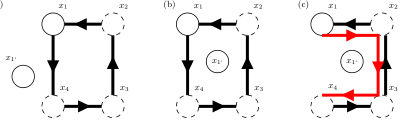
<figcaption class="paper-figure-caption"><b>Fig 1.</b> FIG. 1. The solid circles represent the anyons in states |a1, ¯a1′⟩and |a1, ¯a1′′⟩. If moving operators M a 21, M a 32, M a 43 and M a 14 are supported around the black lines in panels (a) and (b) and if they satisfy Eq. (11), i.e., M a 14M a 43M a 32M a 21|a1, ¯a1′⟩= M a 14M a 41|a1, ¯a1′⟩= |a1, ¯a1′⟩, then the analogous equation M a 14M a 43M a 32M a 21|a1, ¯a1′′⟩= |a1, ¯a1′′⟩is not expected to hold, as there can be an additional mutual braiding phase factor between a and ¯a when M a 14M a 43M a 32M a 21 acts on |a1, ¯a1′′⟩. To make both Eq. (11) and this analogous equation hold, once M a 21, M a 32 and M a 43 are taken to be supported around the black lines in panels (a) and (b), M a 41...</figcaption>
</figure>
<figure class="paper-figure-card">
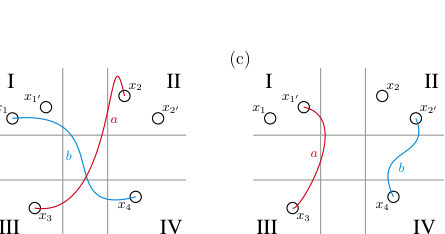
<figcaption class="paper-figure-caption"><b>Fig 2.</b> FIG. 2. (a) The 4 regions I, II, III, and IV are all outside of the two strips, such that moving along II-I-III-IV should wind around the overlapping region of the strips in a counter-clockwise manner. (b) and (c): The two processes differ by a braiding.</figcaption>
</figure>
<figure class="paper-figure-card">
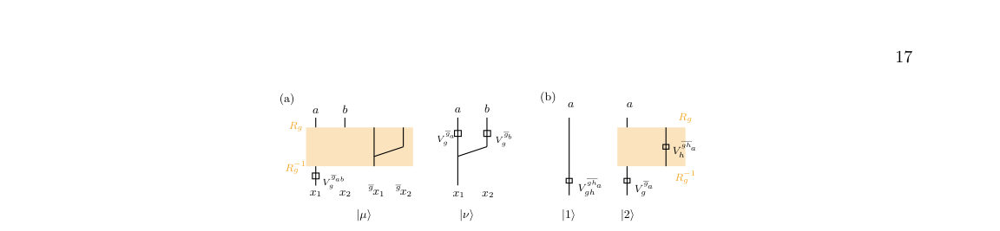
<figcaption class="paper-figure-caption"><b>Fig 3.</b> FIG. 3. (a) Graphic representations of the states in Eq. (27). (b) Graphic representations of the states in Eq. (28). The shaded region means the actions of Rg and R−1 g , where the positions of the anyons can be changed.</figcaption>
</figure>
<figure class="paper-figure-card">
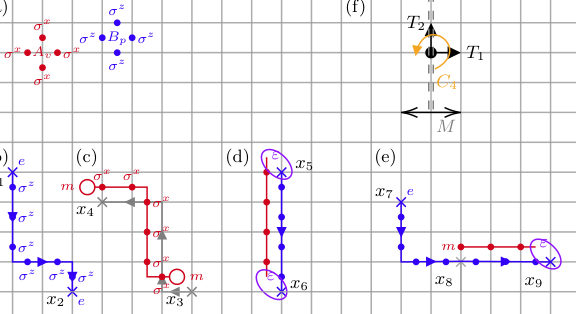
<figcaption class="paper-figure-caption"><b>Fig 4.</b> FIG. 4. (a) The Av operators and Bp operators. (b) From a ground state, the state |e1, e2⟩can be created by applying the blue e string operator, which is realized by applying σz operators to a string connecting the two vertices x1 and x2. (c) From a ground state, the state |m3, m4⟩can be created by applying the red m string operator, which is realized by applying σx operators to a string connecting the two vertices. When moving or splitting an anyon m from x3 to x4, we always choose the support of the string operator to be at the right side of the gray arrowed line pointing from x3 to x4. (d) From a ground state, the state |ε5, ε6⟩can be created by first applying the blue e string operator...</figcaption>
</figure>
<figure class="paper-figure-card">
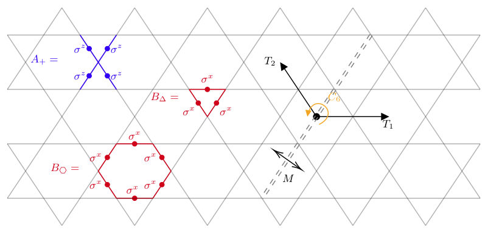
<figcaption class="paper-figure-caption"><b>Fig 5.</b> FIG. 5. The qubits are on the links of the kagome lattice, which are also sites of the ruby lattice. For the generators of the p6m symmetry, T1,2 are translations by 1 unit cell along the two directions as indicated, C6 is a 6-fold rotation around a plaquette with C2 6 denoted by C3 and C3 6 denoted by C2, and M is a reflection whose reflection axis if the double dashed line.</figcaption>
</figure>
</div>

<p><strong>Summary.</strong> This work presents a microscopic universal theory to classify symmetry-enriched topological quantum spin liquids. It characterizes these phases using measurable quantities derived from anyon dynamics and symmetries, establishing the crystalline equivalence principle between lattice and internal symmetries. The framework is highly relevant for designing and understanding fault-tolerant quantum computation based on TQSLs.</p>
<p><strong>Why it may be interesting.</strong> It directly bridges abstract mathematical concepts (category theory) with concrete physical realizations in quantum hardware platforms like trapped ions and Rydberg atoms, providing testable predictions for exotic quantum states.</p>
<details>
<summary>Detailed structure</summary>
<p><strong>Main problem.</strong> To develop a microscopic universal theory characterizing symmetry-enriched topological quantum spin liquids (SET TQSLs) by extracting their universal properties from physically measurable quantities.</p>
<p><strong>Main result.</strong> The theory establishes the crystalline equivalence principle, providing an explicit bijective map between data for TQSLs with general symmetries and those with only internal symmetries.</p>
<p><strong>Method.</strong> The approach uses low-energy dynamics of anyons (motion and splitting operators) and symmetry actions to define universal data, which is organized using generalizations of category theory.</p>
<p><strong>Model / system.</strong> The focus is on two-dimensional (2+1)D TQSLs applicable to generic systems with complex symmetries (internal/lattice, unitary/anti-unitary). Demonstrations are planned for superconducting qubits, trapped ions, and Rydberg atoms.</p>
<p><strong>Key observables.</strong> Anyon statistics, fusion rules, symmetry actions, moving/splitting operators ($M_{a}^{21}$, $(S_{bc}^{a,\mu})^{21}$), $\eta$-phases, and cohomology invariants.</p>
<p><strong>Important parameters / regimes.</strong> The theory is concerned with the structure of universal data invariant under quasi-adiabatic continuation, linking lattice symmetries to internal ones.</p>
<p><strong>Assumptions / limitations.</strong> Assumes operators like $M$ and $S$ are unitary; approximations are made regarding exponentially decaying tails of operators when anyons are far apart.</p>
<p><strong>Figures summary.</strong> Not specified in the notes, but mentions Figure 1 illustrating spacetime trajectories for moving operators ($M$) and braiding relations.</p>
<p><strong>Paper structure.</strong> The paper systematically builds the theory by defining microscopic inputs (anyon states/operators), deriving universal data structures (generalizing category theory), establishing the crystalline equivalence principle, and verifying consistency via gauge transformations ($\eta', U'$).</p>
</details>
<details>
<summary>Abstract</summary>
<p>An ultimate theory of a phase of matter should describe all its universal properties via quantities that are measurable numerically and experimentally. In this work, we present a microscopic universal theory of symmetry-enriched topological quantum spin liquids (TQSLs) in two spatial dimensions, which directly utilizes microscopically measurable quantities to describe the universal properties. This theory applies to generic TQSLs, which can be Abelian or non-Abelian, chiral or non-chiral. The symmetries are also general, which can include both internal and lattice symmetries, unitary and anti-unitary symmetries, and discrete and continuous symmetries. There can be spin-orbit coupling, the microscopic degrees of freedom may transform linearly or projectively under the symmetries, and the symmetries can permute anyons. The input of the theory is some microscopic states with anyons, operators that control the dynamics of anyons, and symmetry actions in the TQSL, and its output is a set of data characterizing the universal properties, whose underlying mathematical structure is a generalization of category theory. Based on this theory, we find an explicit bijective map between the universal data characterizing a TQSL with a symmetry described by a group $G$, where the symmetry actions may include both lattice and internal symmetries, and the corresponding universal data for a TQSL with only an internal symmetry group $G$, and thus establish a precise crystalline equivalence principle. We demonstrate our theory in symmetry-enriched TQSLs realized on quantum processors based on superconducting qubits, trapped ions, and Rydberg atoms, and in each example we verify the Lieb-Schultz-Mattis anomaly matching condition. Our theory provides a solid basis for identifying and manipulating symmetry-enriched TQSLs, which further paves the way for fault-tolerant quantum computation based on these systems.</p>
</details>
<p><sub><a href="#top">↑ back to top</a></sub></p>

<p><a id="paper-2606.09727"></a></p>
<h3 id="sambe-approach-to-floquet-lindblad-open-quantum-systems"><a href="http://arxiv.org/abs/2606.09727v1">Sambe Approach to Floquet-Lindblad Open Quantum Systems</a></h3>
<p><strong>Authors:</strong> Andriani Keliri, Marco Schirò<br>
<strong>Type:</strong> theory · <strong>Category:</strong> other · <strong>PDF:</strong> <a href="https://arxiv.org/pdf/2606.09727v1">https://arxiv.org/pdf/2606.09727v1</a><br>
<strong>Analysis basis:</strong> full PDF text, analyzed in chunks
<strong>Topic relevance:</strong> 🔥 <code>methods for driven-dissipative</code> <strong>4/5</strong> · 🔥 <code>non-equilibrium dynamics</code> <strong>4/5</strong> · <code>driven-dissipative phase transition</code> <strong>3/5</strong> · <code>non-equilibrium universality</code> <strong>2/5</strong> · <code>Keldysh / 2PI / non-Gaussian methods</code> <strong>1/5</strong> · <code>analog quantum simulation</code> <strong>1/5</strong> · <code>correlated / nonlocal dissipation</code> <strong>1/5</strong></p>
<div class="figure-strip-hint">↔ Scroll figures horizontally</div>
<div class="paper-figures-scroll">
<figure class="paper-figure-card">
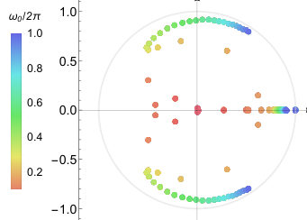
<figcaption class="paper-figure-caption"><b>Fig 1.</b> FIG. 2: Spectrum of the stroboscopic evolution oper- ator as obtained from diagonalization of the Floquet- Lindblad matrix LF at different drive frequencies ω0, for A = ∆, γ = 0.1∆, ∆= 1, ϕ = 0.</figcaption>
</figure>
<figure class="paper-figure-card">
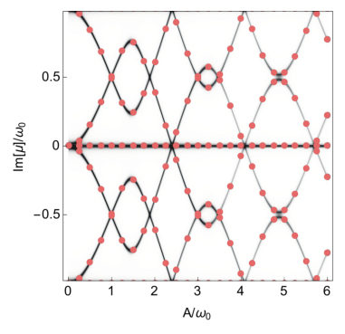
<figcaption class="paper-figure-caption"><b>Fig 2.</b> FIG. 3: Comparison between the Floquet-Lindblad spec- trum obtained from the exact diagonalization of the evolution operator (red dots) and the matrix-continued fraction (black lines). Parameters are chosen as ω0 = ∆/2, γ = 0.01∆, ∆= 1, ϕ = 0.</figcaption>
</figure>
<figure class="paper-figure-card">
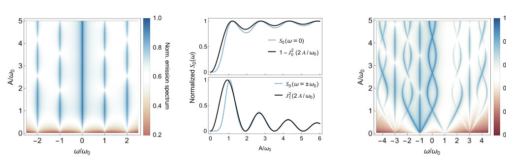
<figcaption class="paper-figure-caption"><b>Fig 3.</b> FIG. 4: (a),(c): Emission spectra of the periodically driven TLS as a function of the emission frequency ω and the amplitude of the drive A in units of the drive frequency ω0. The intensity of the emission is normalized to 1. In (a) the level splitting is zero ∆= 0, while in (c) the drive frequency is resonant to the splitting ∆= ω0. (b): Comparison of the intensity of the emission lines at ω = 0 (top panel) and at ω = ±ω0 (bottom panel) with Bessel functions of the first kind J2 p(2A/ω0) in the case ∆= 0. The rest of the parameters are ω0 = 1, γ = 0.01, ϕ = 0.</figcaption>
</figure>
<figure class="paper-figure-card">
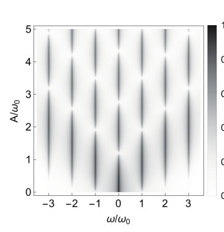
<figcaption class="paper-figure-caption"><b>Fig 4.</b> FIG. 5: Spectral function A(ω) of the driven resonant level model as a function of the amplitude of the drive A and the frequency ω in units of the drive frequency ω0 obtained through the continued fraction method. The rest of the parameters are set to γL = γR = 0.01, εd = 0.</figcaption>
</figure>
<figure class="paper-figure-card">
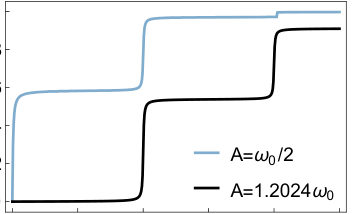
<figcaption class="paper-figure-caption"><b>Fig 5.</b> FIG. 6: Current-voltage characteristics for different driv- ing amplitudes showing the suppression of current at the Bessel function zero of J0(2A/ω0). ω0 = 1, γL = γR = 0.01, εd = 0.</figcaption>
</figure>
</div>

<p><strong>Summary.</strong> This paper develops an advanced theoretical framework to handle periodically driven open quantum systems using Lindblad master equations. It extends established Floquet theory by mapping the problem into an enlarged Sambe-Liouville space, allowing for the construction of an effective time-independent Lindbladian. This method is powerful because it non-perturbatively calculates spectral properties and transport characteristics in regimes where simpler approximations fail.</p>
<p><strong>Why it may be interesting.</strong> This work provides a rigorous theoretical toolset to analyze non-equilibrium steady states in driven quantum matter, bridging the gap between unitary Floquet engineering and dissipative dynamics crucial for quantum optics and solid-state physics.</p>
<details>
<summary>Detailed structure</summary>
<p><strong>Main problem.</strong> The central problem is extending Floquet engineering concepts, traditionally used for closed quantum systems, to open quantum systems governed by time-periodic Lindblad master equations.</p>
<p><strong>Main result.</strong> The authors develop a method using an extended Sambe-Liouville space and matrix continued fractions to construct a well-defined, effective time-independent Floquet Lindbladian acting on the physical Liouville space.</p>
<p><strong>Method.</strong> Key methods include applying Floquet theory to periodic superoperators, mapping the problem into an enlarged Sambe-Liouville space, and utilizing the matrix continued fraction method for non-perturbative summation of multiphoton processes.</p>
<p><strong>Model / system.</strong> The study concerns open quantum systems driven periodically in time, described by a Lindblad master equation. Applications include dissipating two-level systems (TLS) and parametrically driven quantum dots coupled to leads.</p>
<p><strong>Key observables.</strong> Resonance fluorescence spectrum, spectral function, current-voltage characteristics, and correlation functions of the system observables.</p>
<p><strong>Important parameters / regimes.</strong> Drive frequency ($\omega_0$), coupling strengths ($A$), dissipation rates ($\gamma$), and the ratio $A/\omega_0$ (drive amplitude to frequency).</p>
<p><strong>Assumptions / limitations.</strong> The primary assumption is that a time-independent Floquet Lindbladian can be constructed, which is non-trivial due to the non-unitary nature of open system evolution.</p>
<p><strong>Figures summary.</strong> Figures illustrate the spectrum of the extended Floquet matrix ($\mathcal{L}_F$) and its stroboscopic counterpart ($V(T, 0)$), as well as current-voltage characteristics showing suppression at Bessel function zeros.</p>
<p><strong>Paper structure.</strong> The paper progresses by first establishing the need for an extension of Floquet theory to open systems. It details the Sambe approach in extended space, then introduces the matrix continued fraction method to project onto the physical subspace, and finally applies this framework to calculate spectral properties and transport characteristics.</p>
</details>
<details>
<summary>Abstract</summary>
<p>We study driven and open quantum systems described by a time-periodic Lindblad master equation. In closed systems, the stroboscopic dynamics can always be described by an effective time-independent Floquet Hamiltonian; this idea is the basis of Floquet engineering. However, in the presence of dissipation, the existence of an effective time-independent Floquet Lindbladian is not guaranteed due to the non-unitary nature of the evolution. Using Floquet theory, we construct a well-defined time-independent Floquet Lindbladian in an extended Sambe-Liouville space, transforming the initial time-dependent problem to a static and non-Hermitian eigenvalue problem. For harmonic driving, we introduce a matrix continued fraction method to nonperturbatively resum multiphoton processes and construct an effective Floquet Lindbladian acting only on the physical Liouville space. Compared to other high-frequency expansions, this method has the advantage of providing the whole infinite series expansion at once. Using a resolvent formalism, we show how to obtain a spectral Floquet representation of correlation functions of an open quantum system. As an application, we consider a dissipating two-level system in a linearly polarized field and calculate its resonance fluorescence spectrum. Furthermore, we consider a parametrically driven quantum dot with pump and loss for which we calculate its spectral function and current-voltage characteristics.</p>
</details>
<p><sub><a href="#top">↑ back to top</a></sub></p>

<p><a id="paper-2606.08839"></a></p>
<h3 id="time-evolution-of-heat-conduction-in-a-generalized-model-of-brownian-motion"><a href="http://arxiv.org/abs/2606.08839v1">Time Evolution of Heat Conduction in a Generalized Model of Brownian Motion</a></h3>
<p><strong>Authors:</strong> T. Koide, F. Nicacio<br>
<strong>Type:</strong> theory · <strong>Category:</strong> statistical mechanics · <strong>PDF:</strong> <a href="https://arxiv.org/pdf/2606.08839v1">https://arxiv.org/pdf/2606.08839v1</a><br>
<strong>Analysis basis:</strong> full PDF text, analyzed in chunks
<strong>Topic relevance:</strong> 🔥 <code>non-equilibrium dynamics</code> <strong>4/5</strong> · <code>methods for driven-dissipative</code> <strong>3/5</strong> · <code>non-equilibrium universality</code> <strong>3/5</strong> · <code>correlated / nonlocal dissipation</code> <strong>2/5</strong> · <code>driven-dissipative phase transition</code> <strong>2/5</strong> · <code>Frenkel-Kontorova</code> <strong>1/5</strong> · <code>Keldysh / 2PI / non-Gaussian methods</code> <strong>1/5</strong></p>
<div class="figure-strip-hint">↔ Scroll figures horizontally</div>
<div class="paper-figures-scroll">
<figure class="paper-figure-card">
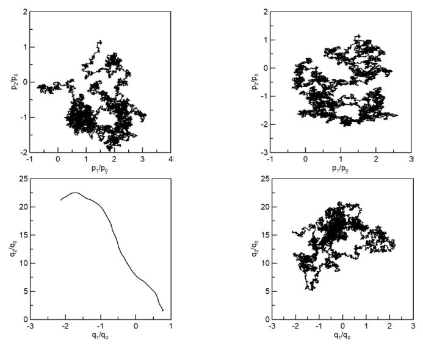
<figcaption class="paper-figure-caption"><b>Fig 1.</b> Figure 1. Trajectories obtained by solving Eqs. (1) and (2) are plotted. The top-left and top-right panels show the momentum trajectories for γq = 0 and γq = 1 in the (p1, p2) plane, respectively. Both appear as zigzag lines. The bottom-left and bottom- right panels show the position trajectories in the (q1, q2) plane. For γq = 0 (left panel), the trajectory is smooth, whereas for γq = 1 (right panel), it becomes zigzag due to the direct influence of the noise term.</figcaption>
</figure>
<figure class="paper-figure-card">
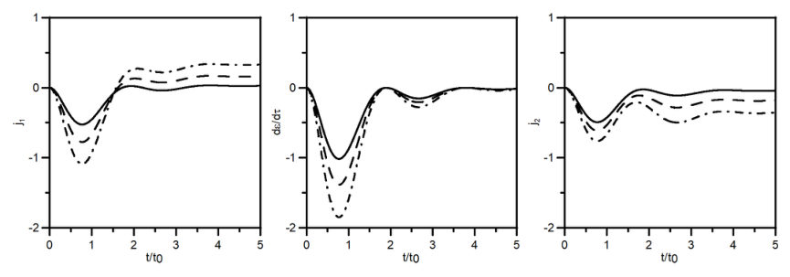
<figcaption class="paper-figure-caption"><b>Fig 2.</b> Figure 2. The time evolutions of the heat current j1 (left panel), the change of energy dϵ/dτ (center) and the heat current j2 (right panel) are plotted for the standard Brownian motion, γq = 0 (δ = −1). We set γp = χ = 1, δ = −1 and β2 = 1. The solid, dashed and dash-dotted lines correspond to temperature 1/β1 = 1.2, 2 and 3, respectively. The three trajectories of j1 converge toward the analytical values obtained through Eq. (64). On the center figure, the numerical solutions converge toward zero asymptotically in time, showing the system reaches a steady state.</figcaption>
</figure>
<figure class="paper-figure-card">
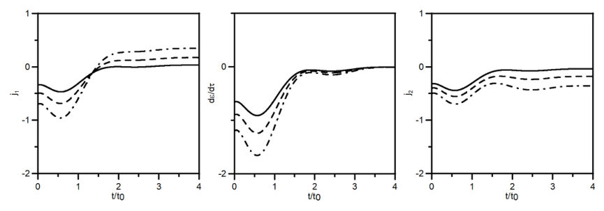
<figcaption class="paper-figure-caption"><b>Fig 3.</b> Figure 3. The time evolution of the heat current j1 (left panel), the rate of energy change dϵ/dτ (center), and the heat current j2 (right panel) for the generalized Brownian motion with parameter γq = 0.1 (δ = −0.9). We set γp = χ = 1 and β2 = 1. The solid, dashed, and dash-dotted lines correspond to temperatures 1/β1 = 1.2, 2, and 3, respectively. The three trajectories of j1 converge toward the analytical values obtained through Eq. (64). In the center panel, the numerical solutions asymptotically converge toward zero, demonstrating that the system reaches a steady state.</figcaption>
</figure>
<figure class="paper-figure-card">
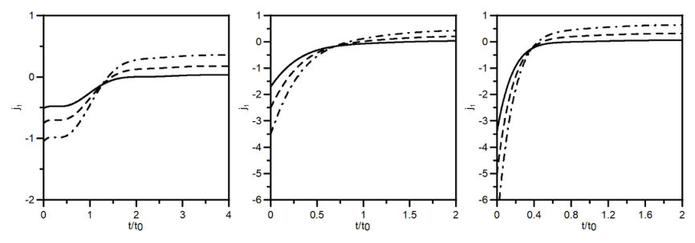
<figcaption class="paper-figure-caption"><b>Fig 4.</b> Figure 4. The time evolutions of j1 for larger magnitude, γq = 0.15, 0.5, and 1 are shown in the left, center, and right panels, respectively. We set γp = χ = 1 and β2 = 1. The solid, dashed, and dash-dotted lines correspond to temperatures 1/β1 = 1.2, 2, and 3, respectively, while keeping 1/β2 = 1 fixed.</figcaption>
</figure>
<figure class="paper-figure-card">
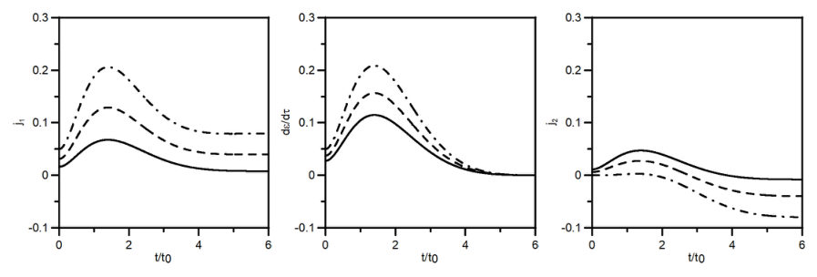
<figcaption class="paper-figure-caption"><b>Fig 5.</b> Figure 5. The time evolution of the heat current j1 (left panel), the rate of energy change dϵ/dτ (center), and the heat current j2 (right panel) is plotted for γq = 0.1 (δ = −0.9). The parameters are set to χ = −0.25 and β2 = 1. The solid, dashed, and dash-dotted lines correspond to the temperatures 1/β1 = 1.2, 2, and 3, respectively.</figcaption>
</figure>
</div>

<p><strong>Summary.</strong> The paper develops and analyzes a generalized model of Brownian motion for heat conduction in coupled oscillators. It successfully demonstrates that this advanced framework reproduces Fourier's law in the steady state, confirming its validity for non-equilibrium thermodynamics. Crucially, it predicts unique transient behaviors, such as instantaneous heat jumps, which differ significantly from standard models.</p>
<p><strong>Why it may be interesting.</strong> This work is highly relevant as it bridges classical non-equilibrium statistical mechanics with quantum thermodynamics by providing a robust stochastic model that satisfies fundamental laws while incorporating complex dissipation mechanisms.</p>
<details>
<summary>Detailed structure</summary>
<p><strong>Main problem.</strong> The study investigates deriving macroscopic thermal conduction laws, such as Fourier's law, from microscopic dynamics using a generalized model of Brownian motion.</p>
<p><strong>Main result.</strong> The generalized model successfully reproduces Fourier's law in the steady state and captures non-equilibrium effects like thermal boundary resistance. It also predicts characteristic transient heat flow behavior when interactions are suddenly introduced.</p>
<p><strong>Method.</strong> The authors use an extended framework of stochastic energetics to define heat current, analyze correlation functions via solving coupled differential equations derived from generalized Langevin dynamics, and examine both steady-state and transient regimes.</p>
<p><strong>Model / system.</strong> The system is a network of coupled harmonic oscillators (initially $N=2$) interacting with separate heat baths at different temperatures. The dynamics are governed by generalized stochastic differential equations incorporating fluctuation and dissipation into both momentum and position coordinates, extending standard Brownian motion.</p>
<p><strong>Key observables.</strong> Heat current ($J$), steady-state thermal conductivity ($\kappa$), energy change rate ($\mathrm{d}\epsilon/\mathrm{d}	au$), and temperature differences ($T_{	ext{kin},1} - T_{	ext{kin},2}$ vs. $T_1 - T_2$).</p>
<p><strong>Important parameters / regimes.</strong> Dissipation coefficients ($\gamma_{qi}, \gamma_{pi}$), interaction strength ($K_{	ext{int}}$), and the degree of generalization ($\gamma_q > 0$ vs. $\gamma_q = 0$).</p>
<p><strong>Assumptions / limitations.</strong> The analysis relies on extending stochastic energetics to define heat flux where standard definitions fail, and it notes that initial instantaneous heat currents are artifacts of assuming an abrupt change in interaction potential.</p>
<p><strong>Figures summary.</strong> Figures illustrate the difference between trajectories for standard vs. generalized Brownian motion (momentum/position paths) and show the time evolution of heat currents ($j_1, j_2$) under different coupling regimes (standard, generalized, repulsive).</p>
<p><strong>Paper structure.</strong> The paper progresses from establishing the need for a generalized stochastic framework to derive consistent thermodynamic quantities, analytically verifying Fourier's law in steady state, and finally analyzing transient dynamics when inter-particle interactions are switched on.</p>
</details>
<details>
<summary>Abstract</summary>
<p>We investigate the properties of heat conduction in a network of harmonic oscillators interacting with heat baths, described by a generalized model of Brownian motion. This model includes noise and dissipation terms in both the momentum and position equations. This generalization is motivated by the requirement of consistency with the Gorini-Kossakowski-Sudarshan-Lindblad (GKSL) equation. Because standard definitions of heat current based on velocity become mathematically inconsistent in this framework, we derive an analytical expression for the steady-state heat flow based on an extended framework of stochastic energetics. We confirm that Fourier's law (linear thermal response) is satisfied and that the model naturally captures microscopic thermal boundary resistance, analogous to Kapitza resistance. This demonstrates that our generalized model functions as a valid phenomenological framework for simulating non-equilibrium processes, marking a crucial step toward a unified formulation of stochastic and quantum thermodynamics. Furthermore, we analyze the time evolution of heat conduction by numerically solving the corresponding differential equations for the correlation functions. Unlike standard Brownian motion, the generalized model generates continuous and nowhere differentiable trajectories for both momentum and position (as is characteristic of overdamped dynamics). Finally, we show that the heat current exhibits characteristic transient behavior when the inter-particle interaction is switched on. Specifically, an instantaneous heat flow emerges, whose direction is strictly governed by whether the interaction is attractive or repulsive, significantly differing from the predictions of the standard model.</p>
</details>
<p><sub><a href="#top">↑ back to top</a></sub></p>

<p><a id="paper-2606.07899"></a></p>
<h3 id="all-optical-wide-field-magnetometry-with-van-der-waals-quantum-sensor"><a href="http://arxiv.org/abs/2606.07899v1">All-Optical Wide-Field Magnetometry with Van Der Waals Quantum Sensor</a></h3>
<p><strong>Authors:</strong> Feifei Zhou, Peiyan Ma, Jiajun Li, Ke Jing, Shihao Ru, Hongwei Chen, Ying Dong, Xinqing Wang<br>
<strong>Type:</strong> experiment · <strong>Category:</strong> other · <strong>PDF:</strong> <a href="https://arxiv.org/pdf/2606.07899v1">https://arxiv.org/pdf/2606.07899v1</a><br>
<strong>Analysis basis:</strong> full PDF text, analyzed in chunks
<strong>Topic relevance:</strong> 🔥 <code>spintronics-quantum-optics interface</code> <strong>4/5</strong> · <code>exotic spin models in light-matter</code> <strong>3/5</strong> · <code>analog quantum simulation</code> <strong>2/5</strong> · <code>quantum measurements</code> <strong>2/5</strong> · <code>QC/QI experiment</code> <strong>1/5</strong> · <code>measurement-induced transitions</code> <strong>1/5</strong> · <code>methods for driven-dissipative</code> <strong>1/5</strong> · <code>quantum optics experiment</code> <strong>1/5</strong></p>
<div class="figure-strip-hint">↔ Scroll figures horizontally</div>
<div class="paper-figures-scroll">
<figure class="paper-figure-card">
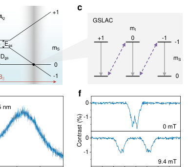
<figcaption class="paper-figure-caption"><b>Fig 1.</b> Fig. 1 (a) Atomic lattice structure of the V − B center in h-BN. (b) Schematic of electron-spin energy levels of the V − B center. Green arrow represents the 532-nm laser irradiation, red wave arrows denotes the photon emissions, and the gray lines indicate the ISC transition of the V − B center. Orange (blue) gradient-filled block shows the excited (ground) triplet spin states. The black dot represents the GSLAC point. (c) Schematic of spin transitions at GSLAC point. The gray arrows denote the ISC transition, and the purple dashed arrows denote the ESR assisted by the flip-flop of nuclear spins. (d) Raman spectrum of the h-BN sample used in this study. An expected peak of around 1367 cm−1...</figcaption>
</figure>
<figure class="paper-figure-card">
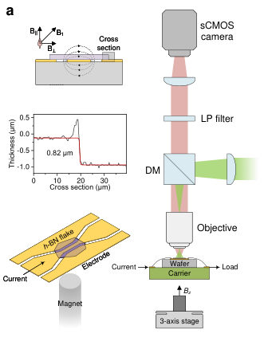
<figcaption class="paper-figure-caption"><b>Fig 2.</b> Fig. 2 (a) The architecture of our wide-field microscope. Green-filled path represents the 532 nm laser, and the light red-filled path denotes the collection of PL signals. The three-dimensional model exhibits the core details of CPW circuits covered by h-BN flake with a thickness of 0.82 µm. A cross section schematic of CPW describes the contour lines of current-induced magnetic field B1, which consists of two components B∥and B⊥referring to the quantum axis of V − B centers. DM, dichroic mirror; LP, long-pass. (b) Magnetic-field-dependent ODMR mapping of V − B centers. The dark red tracks are attributed to the ground-state ESR between ms = 0 and ms = ±1. The other two transparent tracks...</figcaption>
</figure>
<figure class="paper-figure-card">
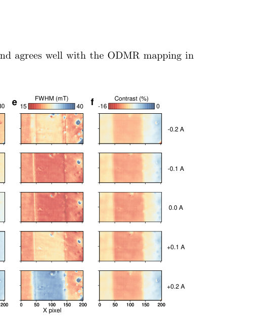
<figcaption class="paper-figure-caption"><b>Fig 3.</b> Fig. 3 (a) PL image of h-BN flake covering the strip-line surface. GSLAC behaviors at site-1 and site-2 are further studied. (b) GSLAC behaviors at site-1 with current magnitudes of 0.0 A and ±0.2 A. Significant shifts of central field are observed. (c) GSLAC behaviors at site-2 with current magnitudes of 0.0 A, +0.1 A, and +0.2 A. The central field has no shifts while the FWHM is significantly broadened due to the increasing of B⊥. (d-f) Distribution of GSLAC features including the central fields (d), the FWHMs (e), and the contrasts (f).</figcaption>
</figure>
</div>

<p><strong>Summary.</strong> The research proposes an all-optical method for measuring magnetic fields using boron vacancy centers in h-BN. By monitoring the Ground-State Level Anti-Crossing (GSLAC), the authors achieve a highly sensitive and wide-field magnetometry technique that is significantly simpler than traditional microwave-based methods.</p>
<p><strong>Why it may be interesting.</strong> This work bridges quantum sensing with condensed matter magnetism by developing a highly sensitive, optically accessible technique that bypasses the need for complex microwave infrastructure, which is relevant to open quantum systems characterization.</p>
<details>
<summary>Detailed structure</summary>
<p><strong>Main problem.</strong> To develop an all-optical, microwave-free technique for wide-field magnetometry using nitrogen vacancy centers in hexagonal boron nitride.</p>
<p><strong>Main result.</strong> The method successfully imaged near-field DC magnetic field distributions with a sensitivity of $67.1 \mu	ext{T}/\sqrt{	ext{Hz}}$, achieving an improvement over conventional ODMR measurements.</p>
<p><strong>Method.</strong> The technique exploits the Ground-State Level Anti-Crossing (GSLAC) feature in boron vacancy centers, monitoring shifts in fluorescence intensity as the external magnetic field is varied.</p>
<p><strong>Model / system.</strong> The system uses negatively charged boron vacancy ($V_B^-$) centers embedded in h-BN. The physics is governed by spin Hamiltonian terms involving Zeeman splitting and hyperfine interactions, leading to GSLAC phenomena.</p>
<p><strong>Key observables.</strong> PL intensity shift, ODMR contrast, central field ($    ext{mT}$), Full Width at Half Maximum ($  ext{FWHM}$, $   ext{mT}$).</p>
<p><strong>Important parameters / regimes.</strong> Magnetic fields ranging from $10 	ext{ mT}$ to $200 	ext{ mT}$; spatial resolution of about $1 \mu	ext{m}$.</p>
<p><strong>Assumptions / limitations.</strong> The method assumes that the GSLAC feature is robustly measurable optically and provides a superior signal-to-noise ratio compared to standard ODMR techniques.</p>
<p><strong>Figures summary.</strong> Figures illustrate atomic structures, energy level schematics showing the GSLAC, and spectral measurements (Raman, PL, ODMR) used to characterize the magnetic field dependence of the spin transitions.</p>
<p><strong>Paper structure.</strong> The paper introduces the physical system ($    ext{V}_B^-$ in h-BN), details the theoretical mechanism (GSLAC for microwave-free measurement), presents the experimental setup for wide-field mapping, and finally reports quantitative measurements of magnetic field sensitivity and spatial resolution.</p>
</details>
<details>
<summary>Abstract</summary>
<p>Negatively charged boron vacancy ($V_B^-$) centers in hexagonal boron nitride ($h$-BN) have attracted wide-range interests owing to their van der Waals lattice and their potentials for $in$-$situ$ quantum sensing. Here we propose and experimentally demonstrate an all-optical strategy for wide-field magnetometry based on $V_B^-$ centers. This strategy exploits the magnetically sensitive ground-state level anti-crossing (GSLAC) of $V_B^-$ centers, which induces a strong electron spin transition between $m_S = 0$ and $m_S = -1$ states, enabling microwave-free magnetic field measurement. By monitoring the shift of GSLAC feature, the external magnetic field can be precisely determined. Using this technique, we demonstrate all-optical wide-field imaging of near-field DC magnetic field distribution from current-carrying circuits over an area of around 42 $\times$ 21 $μ$m$^2$. An estimated photon shot-noise-limited sensitivity of 67.1 $μ$T/$\sqrt{\text{Hz}}$ is achieved for a single pixel, which is an approximately threefold improvement over the ODMR method, along with a spatial resolution of about 1 $μ$m per pixel. Our approach expands the applicability of $V_B^-$ centers in quantum sensing, paving the way for robust and convenient magnetometry under extreme conditions.</p>
</details>
<p><sub><a href="#top">↑ back to top</a></sub></p>

<p><a id="paper-2606.07752"></a></p>
<h3 id="detecting-exciton-condensation-through-charge-transport-in-semiconductor-heterostructures"><a href="http://arxiv.org/abs/2606.07752v1">Detecting Exciton Condensation through Charge Transport in Semiconductor Heterostructures</a></h3>
<p><strong>Authors:</strong> Caterina Zerba, Léo Mangeolle, Michael Knap<br>
<strong>Type:</strong> theory · <strong>Category:</strong> quantum gases · <strong>PDF:</strong> <a href="https://arxiv.org/pdf/2606.07752v1">https://arxiv.org/pdf/2606.07752v1</a><br>
<strong>Analysis basis:</strong> full PDF text, analyzed in chunks
<strong>Topic relevance:</strong> 🔥 <code>analog quantum simulation</code> <strong>4/5</strong> · <code>driven-dissipative phase transition</code> <strong>3/5</strong> · <code>non-equilibrium dynamics</code> <strong>3/5</strong> · <code>non-equilibrium universality</code> <strong>2/5</strong> · <code>Keldysh / 2PI / non-Gaussian methods</code> <strong>1/5</strong> · <code>correlated / nonlocal dissipation</code> <strong>1/5</strong> · <code>methods for driven-dissipative</code> <strong>1/5</strong></p>
<div class="figure-strip-hint">↔ Scroll figures horizontally</div>
<div class="paper-figures-scroll">
<figure class="paper-figure-card">
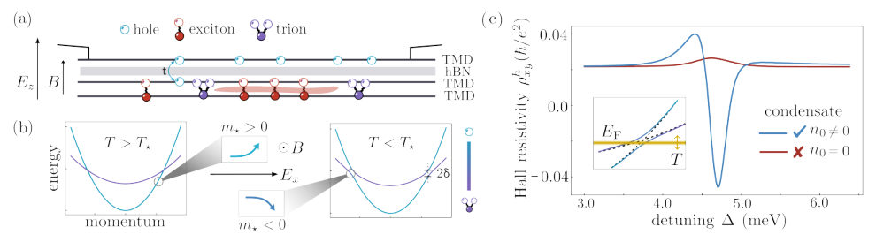
<figcaption class="paper-figure-caption"><b>Fig 1.</b> FIG. 1. Setup and sharp transport signatures of exciton condensation. (a) We consider a multilayer TMD structure; the upper layer is hole-doped, while interlayer excitons are electrically injected between the middle and lower layers. Holes tunnel from the upper to the middle layer and scatter with excitons, forming trions as a stable bound state. A transverse electric field Ez tunes the scattering. Electric contacts with a reservoir induce a field Ex in the upper layer which generates a hole current, and a transverse magnetic field B realizes the Hall effect. (b) When excitons condense, T &lt; T ∗, the hole and trion bands hybridize. The local band curvature defines the local effective mass...</figcaption>
</figure>
<figure class="paper-figure-card">
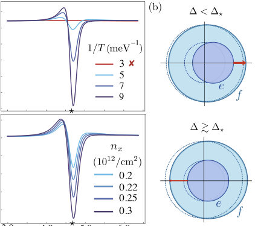
<figcaption class="paper-figure-caption"><b>Fig 2.</b> FIG. 2. Hall resistivity ρh xy. (a) Hall resistivity ρh xy as a function of detuning ∆for different values of temperature T at nx = 0.25 · 1012 cm−2 (top) and exciton density nx at 1/T = 6 meV−1 (bottom). The red curve corresponds to the absence of the condensate. (b) Physical picture for kinetics and scattering mechanisms. The momentum-space displacement of each Fermi sea α ∈{e, f} depends on its effective charge ξαe and hence on ∆. Off resonance (top) only one Fermi surface is significantly displaced, while near resonance (bottom) both are. This determines the strength of the interband scattering (represented by the width of the red arrow), which in turn determines the asymmetry of ρh xy...</figcaption>
</figure>
<figure class="paper-figure-card">
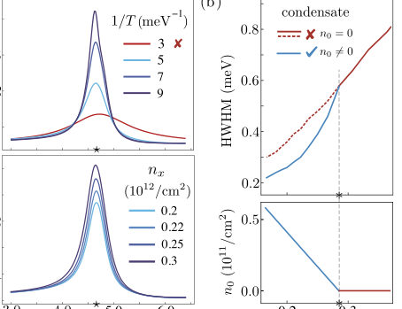
<figcaption class="paper-figure-caption"><b>Fig 3.</b> FIG. 3. Longitudinal resistivity. (a) Longitudinal resis- tivity ρh xx as a function of detuning ∆for different values of temperature T at nx = 0.25 · 1012 cm−2 (top) and exciton density nx at 1/T = 6 meV−1 (bottom). The red curve cor- responds to the absence of the condensate. (b) Half Width at Half Maximum (HWHM) of the longitudinal resistivity (top) and condensate density n0 (bottom). Upon condensation, the phase space available for scattering decreases compared to the non-condensed case (red dashed curve, obtained by taking n0 →0 at fixed nx, T), and the resonance region is narrowed. The cusp in HWHM thus detects exciton condensation.</figcaption>
</figure>
<figure class="paper-figure-card">
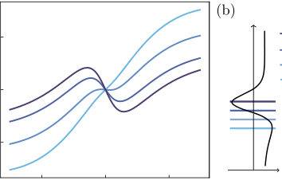
<figcaption class="paper-figure-caption"><b>Fig 4.</b> FIG. 4. Magnetic field dependence of the Hall conduc- tivity σh xy near resonance. (a) Negative Hall conductivity −σh xy of the holes in the presence of an exciton condensate as a function of the magnetic field B for several values of ∆ near resonance. At large B, the negative slope (a hallmark of condensation) disappears, as a consequence of strong magne- toresistive effects. (b) Corresponding ρh xy at fixed B = 0.1 T.</figcaption>
</figure>
</div>

<p><strong>Summary.</strong> The paper proposes using charge transport measurements to detect exciton condensation in semiconductor heterostructures. By modeling the system as an interacting Bose-Fermi mixture tunable via a Feshbach resonance, the authors predict two distinct signatures: a general resistivity drop and a highly characteristic sign reversal in the Hall resistivity ($
ho_{hxy}$). This establishes charge transport as a powerful diagnostic tool for studying excitonic quantum phases.</p>
<p><strong>Why it may be interesting.</strong> This work bridges concepts from ultracold atomic physics (Feshbach resonance, BEC diagnostics) into solid-state condensed matter systems, providing a concrete transport measurement analogue for studying quantum phase transitions like exciton condensation.</p>
<details>
<summary>Detailed structure</summary>
<p><strong>Main problem.</strong> The primary goal is to find a measurable signature of exciton condensation in semiconductor heterostructures using charge transport measurements.</p>
<p><strong>Main result.</strong> Two key signatures are established: (1) A general reduction in resistivity due to suppressed carrier scattering, and (2) A striking sign reversal in the Hall resistivity ($
ho_{hxy}$) when a tunable solid-state Feshbach resonance is present.</p>
<p><strong>Method.</strong> The analysis employs kinetic theory by deriving and solving coupled Boltzmann equations for three quasiparticle species near an avoided crossing induced by exciton-carrier hybridization.</p>
<p><strong>Model / system.</strong> The system models strongly interacting Bose-Fermi mixtures in semiconductor heterostructures, specifically using Transition Metal Dichalcogenide (TMD) layers. The interactions are tunable via a solid-state Feshbach resonance, leading to the formation of hybridized fermionic bands.</p>
<p><strong>Key observables.</strong> Resistivity ($
ho_{hxx}, 
ho_{hxy}$), particularly focusing on the sign reversal and magnitude changes in $
ho_{hxy}$.</p>
<p><strong>Important parameters / regimes.</strong> Temperature ($T$), detuning ($\Delta$) relative to resonance, and coupling strengths ($g$).</p>
<p><strong>Assumptions / limitations.</strong> The analysis relies on mean-field treatments for condensation, a kinetic theory approach using coupled Boltzmann equations, and approximations regarding the magnetic field regimes (small vs. large $B$).</p>
<p><strong>Figures summary.</strong> Figures illustrate $
ho_{hxy}$ versus detuning ($\Delta$) showing the characteristic sign reversal upon condensation, and $
ho_{h}^{xx}$ showing peak narrowing with increasing condensate density.</p>
<p><strong>Paper structure.</strong> The paper progresses from identifying the physical problem to developing a theoretical framework using coupled Boltzmann equations. It analyzes different limits (small/large B) and derives specific diagnostic signatures based on band reconstruction and scattering phase space changes.</p>
</details>
<details>
<summary>Abstract</summary>
<p>Direct evidence of exciton condensation in semiconductor heterostructures remains elusive. Here we propose charge transport of doped carriers as a probe of exciton condensation in transition-metal dichalcogenide heterostructures and identify distinct experimental signatures. First, condensation suppresses the phase space for carrier scattering, leading to a reduction in resistivity, that provides a general diagnostic of exciton condensation. Second, in heterostructures with a tunable solid-state Feshbach resonance, condensate-induced hybridization between doped carriers and trion bound states qualitatively modifies transport. In particular, near resonance, this hybridization yields a negative effective mass and a corresponding sign reversal of the Hall resistivity. These results establish charge transport as a promising route for detecting and characterizing exciton condensation in semiconductor heterostructures.</p>
</details>
<p><sub><a href="#top">↑ back to top</a></sub></p>

<p><a id="paper-2606.07952"></a></p>
<h3 id="translationally-covariant-modulated-symmetries-classification-and-goldstone"><a href="http://arxiv.org/abs/2606.07952v1">Translationally Covariant Modulated Symmetries: Classification and Goldstone</a></h3>
<p><strong>Authors:</strong> Bo-Ting Chen, Zihan Zhou, Biao Lian<br>
<strong>Type:</strong> theory · <strong>Category:</strong> other · <strong>PDF:</strong> <a href="https://arxiv.org/pdf/2606.07952v1">https://arxiv.org/pdf/2606.07952v1</a><br>
<strong>Analysis basis:</strong> full PDF text, analyzed in chunks
<strong>Topic relevance:</strong> 🔥 <code>analog quantum simulation</code> <strong>4/5</strong> · <code>driven-dissipative phase transition</code> <strong>2/5</strong> · <code>non-equilibrium dynamics</code> <strong>2/5</strong> · <code>non-equilibrium universality</code> <strong>2/5</strong> · <code>Frenkel-Kontorova</code> <strong>1/5</strong> · <code>Keldysh / 2PI / non-Gaussian methods</code> <strong>1/5</strong> · <code>correlated / nonlocal dissipation</code> <strong>1/5</strong> · <code>entanglement &amp; information structure</code> <strong>1/5</strong> · <code>methods for driven-dissipative</code> <strong>1/5</strong></p>
<div class="figure-strip-hint">↔ Scroll figures horizontally</div>
<div class="paper-figures-scroll">
<figure class="paper-figure-card">
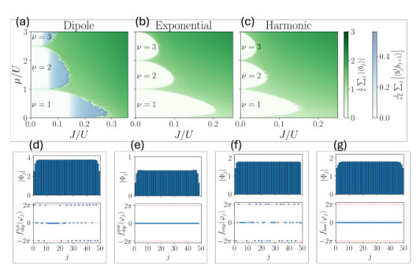
<figcaption class="paper-figure-caption"><b>Fig 1.</b> FIG. 1. (a)-(c): Mean-field phase diagram of deformed Bose- Hubbard models in Tab. I with (a) dipole (U ′ = U/2), (b) exponential (U ′ = 0), and (c) harmonic (U ′ = 0) TCMSs, computed for L = 50 sites with open boundary condition and a maximum on-site boson number cutoff Nmax = 20 (see numerical methods in the SM [47]). (d)-(g): The order parameters Φj = ⟨Ω|ˆΦj|Ω⟩= |Φj|eiφj of the SSB phases with respect to spatial position j. Panels (d),(f) and (g) show Φj = ⟨ˆbj⟩at (µ/U, J/U) = (1.5, 0.3) for the dipole model, ex- ponential model and harmonic model, respectively. Panel (e) shows Φj = ⟨ˆb† jˆbj+1⟩at (µ/U, J/U) = (0.3, 0.2) for the dipole model. In each panel, the upper plot shows the order...</figcaption>
</figure>
<figure class="paper-figure-card">
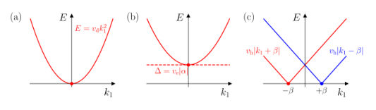
<figcaption class="paper-figure-caption"><b>Fig 2.</b> FIG. 2. Schematic dispersions of the Nambu-Goldstone modes arising from spontaneous breaking of the three classes of mod- ulated symmetries, assuming k⊥= 0. (a) Multipole: a single gapless mode with quadratic dispersion E = vdk2 1, consistent with the conventional Goldstone theorem. (b) Exponential: an intrinsically gapped mode with dispersion E = ve p</figcaption>
</figure>
</div>

<p><strong>Summary.</strong> This theoretical work classifies modulated global symmetries (TCMS) compatible with translationally invariant Hamiltonians. It derives the low-energy effective action for SSB based on the symmetry type (multipole, exponential, harmonic). The key finding is that breaking these symmetries leads to exotic Goldstone modes, modifying conventional theorems and predicting unique spectral features.</p>
<p><strong>Why it may be interesting.</strong> It provides a powerful, systematic framework to analyze exotic gapless excitations in strongly correlated systems beyond standard symmetries, directly impacting understanding of quantum phases.</p>
<details>
<summary>Detailed structure</summary>
<p><strong>Main problem.</strong> To classify translationally covariant modulated symmetries (TCMS) and derive the universal effective Goldstone action for their spontaneous symmetry breaking (SSB).</p>
<p><strong>Main result.</strong> The nature of the broken symmetry dictates the low-energy excitation spectrum: multipole yields higher-order dispersion, harmonic yields modes at finite momenta, and exponential yields no gapless mode.</p>
<p><strong>Method.</strong> The analysis uses algebraic classification based on commutation relations (Jordan normal form) and derives effective Lagrangians via coset construction techniques.</p>
<p><strong>Model / system.</strong> The study applies to quantum many-body systems, exemplified by 1D deformed Bose-Hubbard models exhibiting dipole, exponential, or harmonic modulated symmetries.</p>
<p><strong>Key observables.</strong> Goldstone mode dispersions ($\omega$ vs $k$), order parameters (e.g., $\langle\hat{b}^\dagger_j \hat{b}_{j+1}
angle$), and the structure of the effective Lagrangian components ($M, W^{\mu
u}$).</p>
<p><strong>Important parameters / regimes.</strong> The symmetry type is characterized by the structure constant matrix $A_\mu$, which dictates whether the symmetry is multipole, exponential, or harmonic.</p>
<p><strong>Assumptions / limitations.</strong> The analysis focuses on continuous Abelian TCMSs and often employs mean-field approximations or variational ansatzes for calculations.</p>
<p><strong>Figures summary.</strong> Figures schematically show dispersion relations for different symmetries (e.g., quadratic dispersion for multipole), and tables summarize the resulting Goldstone Lagrangians.</p>
<p><strong>Paper structure.</strong> The paper proceeds by defining TCMSs, classifying them based on algebraic constraints (Jordan form), deriving the generic low-energy action using coset methods, and finally analyzing the specific consequences of SSB for each symmetry type.</p>
</details>
<details>
<summary>Abstract</summary>
<p>Modulated symmetries are global symmetries with a spatially dependent unit of charge, such as the dipole symmetry and the exponential symmetry. We give the generic condition for a modulated symmetry to be compatible with translationally symmetric Hamiltonians, which we define as a translationally covariant modulated symmetry (TCMS). For Abelian TCMSs, we prove that their units of charge can only contain multipole, exponential and harmonic components. Particularly, we classify all the one-dimensional TCMSs by real Jordan normal form blocks. We further derive the generic Goldstone action for SSB phases of continuous TCMSs, by which we show that a broken multipole symmetry gives higher-order gapless Goldstone modes, a broken harmonic symmetry gives gapless Goldstone modes at finite momenta, and a broken exponential symmetry gives no gapless Goldstone modes, modifying the conventional Goldstone theorem.</p>
</details>
<p><sub><a href="#top">↑ back to top</a></sub></p>

<p><a id="paper-2606.08053"></a></p>
<h3 id="numerical-solution-of-the-nonlinear-dirac-equation-by-a-splitting-variational-quantum-algorithm"><a href="http://arxiv.org/abs/2606.08053v1">Numerical solution of the nonlinear Dirac equation by a splitting variational quantum algorithm</a></h3>
<p><strong>Authors:</strong> Qian Zuo, Ying He, Xiaofei Zhao<br>
<strong>Type:</strong> theory · <strong>Category:</strong> quantum information and computing · <strong>PDF:</strong> <a href="https://arxiv.org/pdf/2606.08053v1">https://arxiv.org/pdf/2606.08053v1</a><br>
<strong>Analysis basis:</strong> full PDF text, analyzed in chunks
<strong>Topic relevance:</strong> 🔥 <code>quantum measurements</code> <strong>4/5</strong> · <code>measurement-induced transitions</code> <strong>3/5</strong> · <code>methods for driven-dissipative</code> <strong>3/5</strong> · <code>non-equilibrium dynamics</code> <strong>2/5</strong> · <code>Keldysh / 2PI / non-Gaussian methods</code> <strong>1/5</strong> · <code>driven-dissipative phase transition</code> <strong>1/5</strong></p>
<div class="figure-strip-hint">↔ Scroll figures horizontally</div>
<div class="paper-figures-scroll">
<figure class="paper-figure-card">
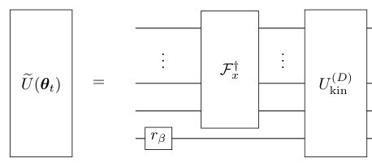
<figcaption class="paper-figure-caption"><b>Fig 1.</b> Fig. 1. Overall circuit realization of eU(θt) = USFDP(τ)U(θt). The circuit is read from right to left. The rightmost block prepares the input spinor state, Fx = QFT ⊗Is maps the position register to the Fourier basis, U(D) kin implements the momentum-controlled kinetic spin rotation, and F† x returns the state to the position basis. The leftmost gate rβ = Rz(2τ) applies the mass-induced spin rotation on the spin qubit; equivalently, its lift to the full position-spin register is Rβ = Ix ⊗rβ.</figcaption>
</figure>
<figure class="paper-figure-card">
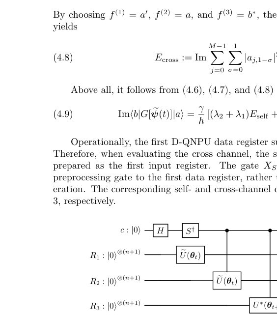
<figcaption class="paper-figure-caption"><b>Fig 2.</b> Fig. 2. Measurement circuit for the self-channel observable Eself. Each data wire denotes an (n + 1)-qubit register, consisting of n position qubits and one spin qubit.</figcaption>
</figure>
<figure class="paper-figure-card">
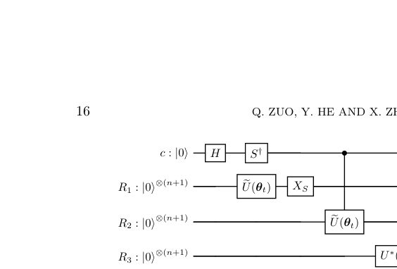
<figcaption class="paper-figure-caption"><b>Fig 3.</b> Fig. 3. Measurement circuit for the cross-channel observable Ecross. The spin-flip gate XS = I⊗n x ⊗Xs is applied unconditionally to the first data register to prepare |a′⟩= XS|a⟩.</figcaption>
</figure>
<figure class="paper-figure-card">
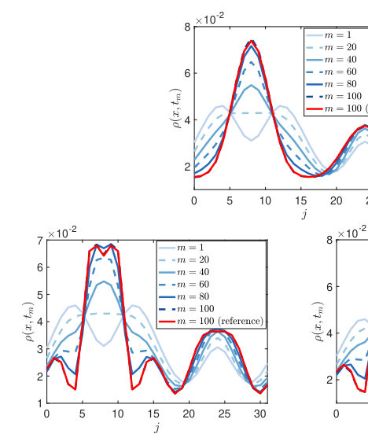
<figcaption class="paper-figure-caption"><b>Fig 4.</b> Fig. 4. Representative Dirac-sVQA solutions for the three benchmark cases. The three panels correspond to Case I, Case II, and Case III, respectively. For clarity, only representative final-time profiles are shown.</figcaption>
</figure>
<figure class="paper-figure-card">
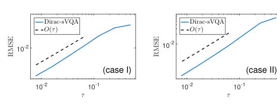
<figcaption class="paper-figure-caption"><b>Fig 5.</b> Fig. 5. Temporal accuracy of Dirac-sVQA for the three nonlinear benchmark cases. The first, second, and third columns correspond to Case I, Case II, and Case III, respectively.</figcaption>
</figure>
</div>

<p><strong>Summary.</strong> The paper presents Dirac-sVQA, a novel operator-splitting variational quantum algorithm designed to simulate the nonlinear Dirac equation. It tackles the difficulty of state-dependent non-unitary evolution by decomposing the problem into a unitary linear step and a measurable nonlinear correction term. The results demonstrate that this hybrid approach accurately captures complex spinor dynamics, providing strong evidence for applying VQA methods to nonlinear relativistic wave equations.</p>
<p><strong>Why it may be interesting.</strong> This work directly addresses the challenge of simulating non-unitary, state-dependent dynamics (like those in many interacting quantum systems) on near-term quantum hardware by mapping them onto variational optimization problems using measurement techniques.</p>
<details>
<summary>Detailed structure</summary>
<p><strong>Main problem.</strong> The primary goal is to develop a quantum algorithm capable of numerically simulating the time evolution governed by the nonlinear Dirac equation (NLDE).</p>
<p><strong>Main result.</strong> The proposed Dirac-sVQA successfully captures both total density and componentwise spinor dynamics, showing convergence rates comparable to advanced classical splitting methods.</p>
<p><strong>Method.</strong> It employs an operator-splitting variational quantum algorithm that separates the evolution into a unitary linear substep (using Fourier transforms) and a state-dependent nonlinear correction implemented via measurement-based variational updates.</p>
<p><strong>Model / system.</strong> The system is modeled by the 1D NLDE, which describes the time evolution of a complex-valued spinor field $\Psi(t, x)$ involving spin-momentum coupling. The nonlinearity $F(\Psi)$ makes the evolution state-dependent and non-unitary.</p>
<p><strong>Key observables.</strong> Total density ($
ho$), componentwise spinor dynamics ($|\Psi_0|^2, |\Psi_1|^2$), Root Mean Square Error (RMSE), Overlap ($E_{   ext{ov}}$), Self-channel ($E_{  ext{self}}$), and Cross-channel ($E_{    ext{cross}}$) expectation values.</p>
<p><strong>Important parameters / regimes.</strong> Nonlinearity coupling constants ($\lambda_1, \lambda_2$), timestep size ($ au$), and ansatz circuit depth ($d$).</p>
<p><strong>Assumptions / limitations.</strong> The nonlinear term is approximated by reformulating the state-dependent map as minimizing a measurable cost function using specialized quantum measurements (D-QNPU).</p>
<p><strong>Figures summary.</strong> Figures illustrate measurement circuits for nonlinear observables, temporal convergence showing $\mathcal{O}(	au)$ error scaling, and diagnostics comparing ansatz expressibility ($  ext{DKL}$) versus numerical accuracy ($ ext{RMSE}$).</p>
<p><strong>Paper structure.</strong> The paper introduces the NLDE, details the operator splitting into linear (SFDP) and nonlinear parts, describes the quantum implementation of each part using QFTs and a D-QNPU, formulates the measurable cost function, and concludes with numerical benchmarking against classical solvers.</p>
</details>
<details>
<summary>Abstract</summary>
<p>In this work, we propose an operator-splitting variational quantum algorithm, termed Dirac-sVQA, for simulating the nonlinear Dirac equation (NLDE). The main difficulty arises from the state-dependent nonlinear interaction, its time-discrete update depends explicitly on the intermediate spinor state and, in general, cannot be implemented as a fixed state-independent unitary circuit. To address this difficulty, we decompose the NLDE evolution into a structured linear Dirac substep and a nonlinear variational correction. The linear substep is implemented by a spinor-Fourier Dirac propagator on a joint position-spin register, preserving the spin-momentum coupling and mass-induced spin evolution of the Dirac operator. The nonlinear correction is reformulated as a measurement-based variational update through a small set of overlap, self-channel, and cross-channel observables. We provide the corresponding quantum circuits and derive measurement-aware resource and complexity estimates. Numerical experiments in several nonlinear regimes show that Dirac-sVQA accurately captures both the total density and the componentwise spinor dynamics, agrees well with classical Fourier pseudospectral splitting solutions, and exhibits stable error behavior over time. These results provide numerical evidence for the feasibility of operator-splitting variational quantum simulation for nonlinear relativistic wave equations.</p>
</details>
<p><sub><a href="#top">↑ back to top</a></sub></p>

<p><a id="paper-2606.09759"></a></p>
<h3 id="suppressing-the-motion-of-rydberg-atoms-in-inhomogeneous-electric-fields-via-stark-echo"><a href="http://arxiv.org/abs/2606.09759v1">Suppressing the Motion of Rydberg Atoms in Inhomogeneous Electric Fields via Stark Echo</a></h3>
<p><strong>Authors:</strong> Dominik Jakab, Manuel Kaiser, Conny Glaser, David Petrosyan, József Fortágh, Andreas Günther<br>
<strong>Type:</strong> both · <strong>Category:</strong> other · <strong>PDF:</strong> <a href="https://arxiv.org/pdf/2606.09759v1">https://arxiv.org/pdf/2606.09759v1</a><br>
<strong>Analysis basis:</strong> full PDF text, analyzed in chunks
<strong>Topic relevance:</strong> 🔥 <code>Rydberg arrays</code> <strong>4/5</strong> · <code>analog quantum simulation</code> <strong>3/5</strong> · <code>QC/QI experiment</code> <strong>2/5</strong> · <code>quantum measurements</code> <strong>2/5</strong> · <code>methods for driven-dissipative</code> <strong>1/5</strong> · <code>non-equilibrium dynamics</code> <strong>1/5</strong> · <code>quantum optics experiment</code> <strong>1/5</strong></p>
<div class="figure-strip-hint">↔ Scroll figures horizontally</div>
<div class="paper-figures-scroll">
<figure class="paper-figure-card">
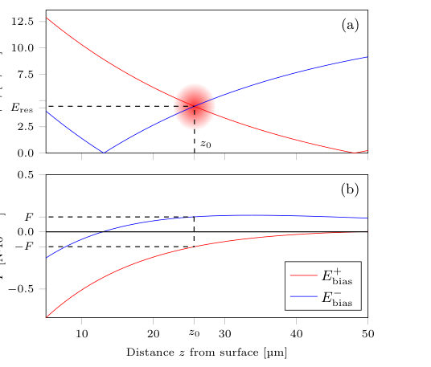
<figcaption class="paper-figure-caption"><b>Fig 1.</b> FIG. 1. Electric field and resulting Stark force near the chip surface. (a) Magnitude of the total electric field |E(z)| as a function of distance z from the chip surface, including the exponentially decaying surface field and the tunable bias. Red and blue lines correspond to Ebias = −4.02 V/cm and −12.93 V/cm, respectively. At the position of the atomic cloud (z0 = 25.75 µm), both values of the bias field produce the same total field magnitude (|Eres| = 4.45 V/cm), but with field gradients of opposite sign. The red shaded area illus- trates the spatial extent of the cloud. (b) Stark force F(z) experienced by 87Rb atoms in the 42S1/2 Rydberg state, cal- culated for the above field with...</figcaption>
</figure>
<figure class="paper-figure-card">
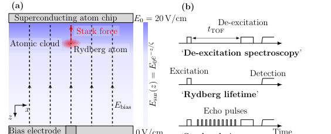
<figcaption class="paper-figure-caption"><b>Fig 2.</b> FIG. 3. Schematics of the experiment. (a) A cloud of atoms (red) is magnetically trapped at a distance of z0 ≈ 25 µm below a superconducting atom chip. The atoms are located in a stray electric field (blue shaded gradient) de- caying exponentially with distance from the chip surface, Esur(z) = E0 exp(−z/ζ), and a homogeneous bias field Ebias (black dashed arrows) is generated by an electrode placed 4.5 mm below the chip surface, forming a plate capacitor with the chip. The inhomogeneous total electric field produces a position-dependent Stark force (red arrow), which accelerates the atoms and shifts the Rydberg energy level. (b) Pulse sequences for the three measurement protocols. Top: de-...</figcaption>
</figure>
<figure class="paper-figure-card">
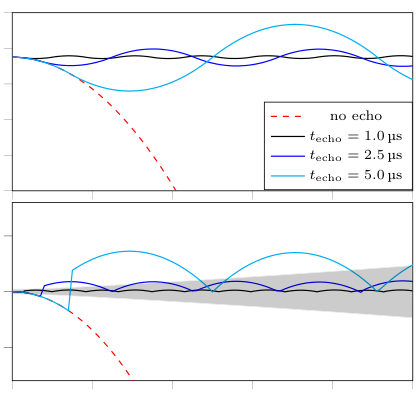
<figcaption class="paper-figure-caption"><b>Fig 3.</b> FIG. 2. Numerical simulation of Stark echo suppression of motional level shift. (a) Simulated center-of-mass position ⟨z⟩as a function of tTOF for atoms excited from an atomic cloud centered at z0 = 25.75 µm with temperature T = 1 µK. The solid black, blue and cyan lines show the results using Stark echo with techo = 1 µs, 2.5 µs and 5 µs, respectively. Due to the echo sequence, the atoms oscillate around their initial position, with the oscillation amplitude depending on techo. The dashed red line shows the trajectory without the echo sequence, with the atoms rapidly accelerating away from their initial position. (b) Corresponding mean level shift ⟨∆ωr⟩of 42S1/2 Rydberg atoms. The solid...</figcaption>
</figure>
<figure class="paper-figure-card">
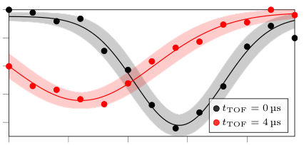
<figcaption class="paper-figure-caption"><b>Fig 4.</b> FIG. 4. De-excitation spectra of Rydberg atoms mea- sured for ∆ωexc/2π ≈150 MHz and different tTOF after excitation. Black circles: Spectrum for tTOF = 0, with an inverted Gaussian fit (solid line) yielding a detuning of ∆ωde-exc/2π = −1.4 MHz and a FWHM of 17.7 MHz. Red circle: Spectrum after tTOF = 4 µs, showing a pronounced red shift (∆ωde-exc/2π = −17.9 MHz) and spectral broaden- ing (FWHM = 28.7 MHz). Each data point is averaged over Nrep = 1000 pulse sequences. The error band denotes the 1σ confidence interval of the fit.</figcaption>
</figure>
<figure class="paper-figure-card">
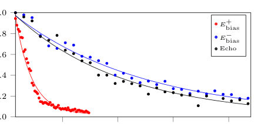
<figcaption class="paper-figure-caption"><b>Fig 5.</b> FIG. 6. Rydberg state population after given tTOF as de- duced from the total number of ion counts for Nrep = 1000 excitation-detection cycles and normalized to the tTOF = 0 value. Atoms are excited at a total field magnitude of |Eres| = 4.45 V/cm. Red: Field gradient accelerating atoms toward the chip, leading to rapid signal loss. Blue: Reversed field gradient accelerating atoms away from the chip and ex- tending detection time. Black: Application of the echo pulse sequence effectively cancels the Stark-induced position shift, preserving the Rydberg signal for durations approaching the natural lifetime. The solid lines are exponential decay fits yielding lifetimes of 5.92 µs, 47.12 µs and...</figcaption>
</figure>
</div>

<p><strong>Summary.</strong> The paper addresses the challenge of maintaining Rydberg atom coherence when trapped near imperfect superconducting surfaces due to inhomogeneous electric fields. By implementing a tailored Stark echo pulse sequence that dynamically reverses the force, the authors successfully suppress atomic motion and prevent detrimental time-dependent energy level shifts. This provides a robust method for realizing high-fidelity quantum operations on integrated atom chips.</p>
<p><strong>Why it may be interesting.</strong> This work provides a crucial coherence preservation technique for using Rydberg atoms in solid-state quantum circuits. It shows how fundamental control over external fields can counteract environmental decoherence sources arising from device imperfections.</p>
<details>
<summary>Detailed structure</summary>
<p><strong>Main problem.</strong> Inhomogeneous stray electric fields near superconducting atom chips induce position-dependent Stark forces on Rydberg atoms, causing atomic motion and time-dependent shifts in energy levels.</p>
<p><strong>Main result.</strong> Implementing a Stark echo sequence dynamically reverses the force, effectively suppressing atomic motion and maintaining the coherence of Rydberg atoms for extended periods. This technique is robust and relies only on global field control.</p>
<p><strong>Method.</strong> The authors combine theoretical modeling (using an exponentially decaying surface field) with experimental measurements using time-of-flight spectroscopy to test and implement a pulsed Stark echo sequence.</p>
<p><strong>Model / system.</strong> The system involves Rydberg atoms trapped near a superconducting chip. The physics is governed by the position-dependent Stark shift, $E(\vec{E}) = -rac{1}{2}\alpha_0 E^2$, where the field $E(z)$ includes both surface and bias components.</p>
<p><strong>Key observables.</strong> Average Rydberg level shift ($\langle\Delta\omega_r
angle$), spatial confinement ($\langle z 
angle$ vs. TOF), and residual spectral broadening.</p>
<p><strong>Important parameters / regimes.</strong> The decay length of the surface field ($\zeta$), the time-of-flight ($t_{	ext{TOF}}$ or $t_{	ext{echo}}$), and the strength of the applied bias field ($E_{	ext{bias}}$).</p>
<p><strong>Assumptions / limitations.</strong> The method relies solely on global field control, and hardware limitations constrain the minimum echo time to be greater than $\approx 3.4 \mu	ext{s}$.</p>
<p><strong>Figures summary.</strong> Figures compare the mean level shift ($\langle\Delta\omega_r
angle$) over time-of-flight with and without the echo sequence; results show near-complete suppression of the shift when the echo is applied.</p>
<p><strong>Paper structure.</strong> The paper first establishes the problem (field-induced motion/shift), develops a theoretical model incorporating surface fields, presents experimental measurements showing rapid decay/shifting without correction, and finally demonstrates that the Stark echo sequence successfully cancels these accumulated shifts.</p>
</details>
<details>
<summary>Abstract</summary>
<p>Rydberg atoms possess strong electric dipole transitions and tunable energy levels, making them promising candidates for microwave to optical conversion on integrated superconducting atom chips. Achieving strong coupling of the atoms to e.g. the microwave field of an on-chip resonator requires placing the atoms within tens of micrometers from the chip surface. However, inhomogeneous stray electric fields originating from the surface can induce position-dependent Stark forces, resulting in atomic motion and leading to time-dependent shifts of the Rydberg energy levels. We experimentally investigate these effects using time-of-flight and spectroscopic techniques, observing substantial level shifts and signal loss attributable to field-induced atomic motion. A theoretical model incorporating an exponentially decaying surface field with a superimposed bias accurately reproduces the observed dynamics. To mitigate the level shift, we introduce a Stark echo sequence that dynamically reverses the force. This approach suppresses the atomic motion and maintains the atomic resonance. The method relies solely on global field control and is compatible with atom-resonator coupling architectures, providing a robust strategy for preserving coherence of Rydberg atoms in inhomogeneous electric fields near surfaces.</p>
</details>
<p><sub><a href="#top">↑ back to top</a></sub></p>

<p><a id="paper-2606.08643"></a></p>
<h3 id="coexistence-of-high-temperature-superconductivity-and-antiferromagnetic-order-in-a-cuprate-with-multiple-hole-fermi-pockets"><a href="http://arxiv.org/abs/2606.08643v1">Coexistence of High Temperature Superconductivity and Antiferromagnetic Order in a Cuprate with Multiple Hole Fermi Pockets</a></h3>
<p><strong>Authors:</strong> Xiangyu Luo, Yinghao Li, Hao Chen, Yiwen Chen, Jumin Shi, Taimin Miao, Bo Liang, Wenpei Zhu, Neng Cai, Xiaolin Ren, Yingjie Shu, Chaohui Yin, Jiuxiang Zhang, Chengtian Lin, Shenjin Zhang, Zhimin Wang, Fengfeng Zhang, Feng Yang, Qinjun Peng, Zuyan Xu, Guodong Liu, Xintong Li, Hanqing Mao, Tao Xiang, Lin Zhao, X. J. Zhou<br>
<strong>Type:</strong> both · <strong>Category:</strong> strongly correlated electrons · <strong>PDF:</strong> <a href="https://arxiv.org/pdf/2606.08643v1">https://arxiv.org/pdf/2606.08643v1</a><br>
<strong>Analysis basis:</strong> full PDF text, analyzed in chunks
<strong>Topic relevance:</strong> 🔥 <code>analog quantum simulation</code> <strong>4/5</strong> · <code>Keldysh / 2PI / non-Gaussian methods</code> <strong>3/5</strong> · <code>methods for driven-dissipative</code> <strong>2/5</strong> · <code>Kondo &amp; dissipative impurity</code> <strong>1/5</strong> · <code>entanglement &amp; information structure</code> <strong>1/5</strong> · <code>exotic spin models in light-matter</code> <strong>1/5</strong> · <code>non-equilibrium dynamics</code> <strong>1/5</strong></p>
<div class="figure-strip-hint">↔ Scroll figures horizontally</div>
<div class="paper-figures-scroll">
<figure class="paper-figure-card">
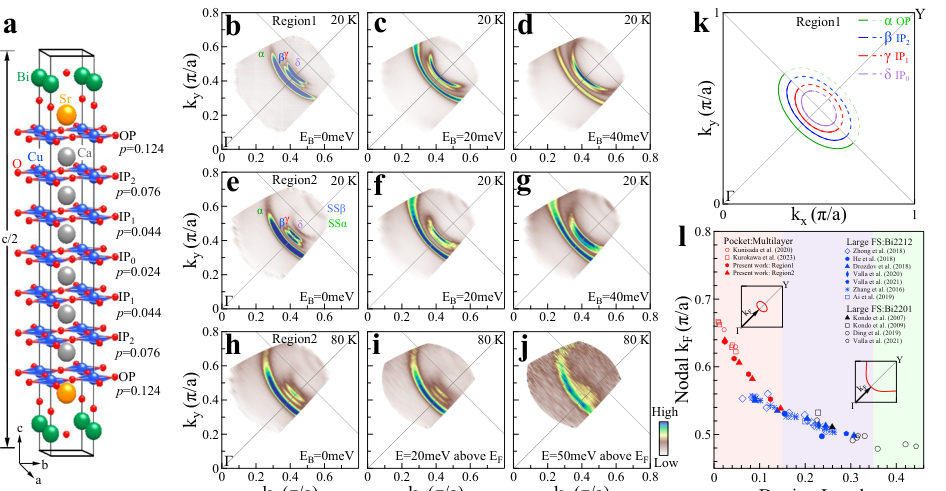
<figcaption class="paper-figure-caption"><b>Fig 1.</b> FIG. 1. Observation of multiple Fermi pockets in Bi2267. (a) Crystal structure of Bi2267.</figcaption>
</figure>
<figure class="paper-figure-card">
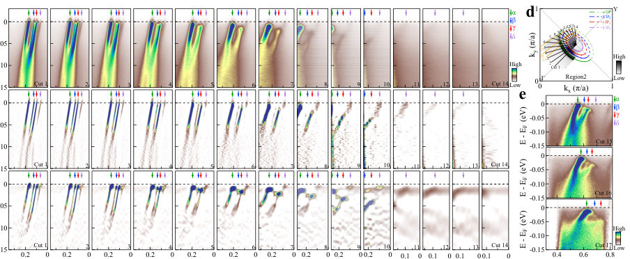
<figcaption class="paper-figure-caption"><b>Fig 2.</b> FIG. 2. Momentum-dependent band structures of Bi2267 measured at 20 K in Re-</figcaption>
</figure>
<figure class="paper-figure-card">
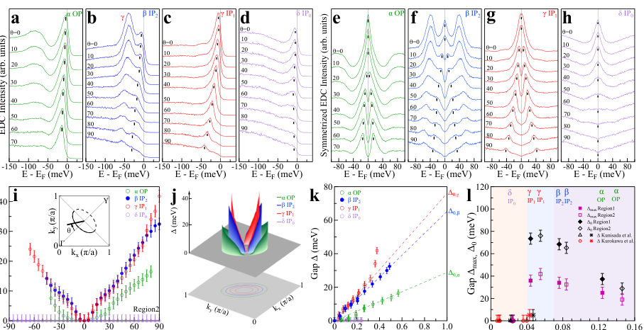
<figcaption class="paper-figure-caption"><b>Fig 3.</b> FIG. 3. Photoemission spectra and the energy gap of Bi2267 along the Fermi pockets</figcaption>
</figure>
<figure class="paper-figure-card">
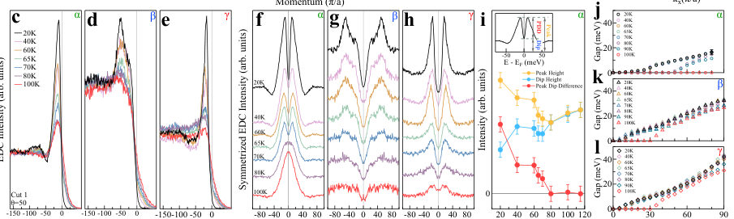
<figcaption class="paper-figure-caption"><b>Fig 4.</b> FIG. 4. Evolution of band structures, photoemission spectra and energy gaps with</figcaption>
</figure>
<figure class="paper-figure-card">
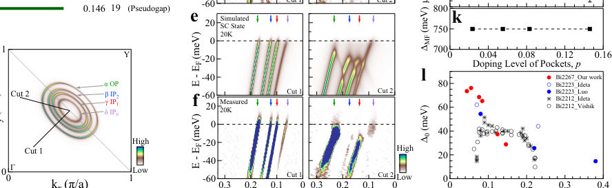
<figcaption class="paper-figure-caption"><b>Fig 5.</b> FIG. 5. Formation of the multiple Fermi pockets in the seven-layer cuprate in terms</figcaption>
</figure>
</div>

<p><strong>Summary.</strong> This work investigates high-temperature superconductivity in layered cuprates using ARPES, revealing the existence of multiple hole Fermi pockets coexisting with strong antiferromagnetism. By combining experimental data with a mean-field t-U model, the authors argue that robust pairing can occur even when AFM order is present, offering new insights into unconventional pairing mechanisms.</p>
<p><strong>Why it may be interesting.</strong> For AMO/open quantum systems theorists, the strong correlation physics described by the Hubbard model variant (t-U) is highly relevant. The interplay between magnetic order (AFM) and pairing symmetry ($d$-wave gap structure) provides a rich platform for studying emergent collective phenomena in strongly interacting electron systems.</p>
<details>
<summary>Detailed structure</summary>
<p><strong>Main problem.</strong> The fundamental mechanism behind high-temperature superconductivity (HTSC) in cuprates, particularly understanding how HTSC coexists with strong antiferromagnetic (AFM) order.</p>
<p><strong>Main result.</strong> Superconductivity ($T_c \sim 75	ext{ K}$) is observed in a system exhibiting multiple hole Fermi pockets that coexist robustly with strong AFM correlations. This challenges conventional views requiring the suppression of AFM order for superconductivity.</p>
<p><strong>Method.</strong> The study combines high-resolution Angle-Resolved Photoemission Spectroscopy (ARPES) experiments with theoretical modeling using the mean-field t-U model to analyze electronic structure and gap formation.</p>
<p><strong>Model / system.</strong> The system is a seven-layer cuprate superconductor ($   ext{Bi}<em 8_delta="8+\delta">2   ext{Sr}_2   ext{CaCu}_2 ext{O}</em>_2$ planes. The theoretical framework employs the mean-field t-U model to describe electronic correlations and interlayer coupling.}$), which exhibits multiple hole Fermi pockets derived from different $    ext{CuO</p>
<p><strong>Key observables.</strong> Multiple, distinct hole Fermi pockets ($\alpha, eta, \gamma, \delta$), momentum-, temperature-, and doping-dependent superconducting energy gaps (up to $\sim 42	ext{ meV}$), and the coexistence of $T_c$ with strong AFM order.</p>
<p><strong>Important parameters / regimes.</strong> Critical temperatures ($T_c \approx 75	ext{ K}$), pairing gap magnitudes ($\Delta$), doping levels ($p \sim 0.05$), and hopping/coupling parameters derived from fitting (e.g., $t, t', t''$).</p>
<p><strong>Assumptions / limitations.</strong> The analysis assumes that the multiple Fermi pockets arise due to varying doping across different $  ext{CuO}_2$ planes within the layered structure, and that the observed gap opening in inner planes is intrinsic.</p>
<p><strong>Figures summary.</strong> Figures detail ARPES measurements showing Fermi surface mappings with four distinct pocket types ($\alpha-\delta$) and energy gaps. Theoretical figures illustrate band structures and fitting parameters derived from the mean-field t-U model applied to the seven-layer structure.</p>
<p><strong>Paper structure.</strong> The paper progresses by first identifying the complex electronic structure via ARPES on multiple pockets, then using a theoretical framework (t-U model) to fit these experimental observations, ultimately arguing that superconductivity and AFM order can coexist in this multi-pocket regime.</p>
</details>
<details>
<summary>Abstract</summary>
<p>The intricate relationship between high temperature superconductivity and antiferromagnetic order in cuprates, and the fundamental origin of electron pairing remain open questions. By utilizing high-resolution laser-based spatially-resolved angle-resolved photoemission spectroscopy, we investigate the seven-layer $Bi_{2}Sr_{2}Ca_{6}Cu_{7}O_{18+δ}$ (Bi2267) and identify a cuprate system that consists of multiple hole Fermi pockets. The observed Fermi pockets exhibit pronounced momentum-, temperature- and Fermi surface-dependent energy gaps. Crucially, high temperature superconductivity with a critical temperature ($T_{\mathrm{c}}$) of $\sim$75 K emerges in a system with multiple Fermi pockets and the presence of strong antiferromagnetic order and correlations. In particular, substantial electron pairing is observed along the Fermi pocket with an energy gap up to $\sim$42 meV in lightly-doped CuO$_{2}$ planes ($p\sim$0.05). These findings challenge the conventional understanding of the roles of the nodal and antinodal electronic states in driving high-temperature superconductivity. They show that superconductivity and antiferromagnetism can coexist in a cuprate with multiple Fermi pockets, offering further insights into the pairing mechanism in cuprate superconductors.</p>
</details>
<p><sub><a href="#top">↑ back to top</a></sub></p>

<p><a id="paper-2606.07880"></a></p>
<h3 id="defining-unique-redundant-and-synergistic-quantum-information"><a href="http://arxiv.org/abs/2606.07880v1">Defining Unique, Redundant, and Synergistic Quantum Information</a></h3>
<p><strong>Authors:</strong> Sean Ericson, Hailin Wang, S. J. van Enk<br>
<strong>Type:</strong> theory · <strong>Category:</strong> quantum information and computing · <strong>PDF:</strong> <a href="https://arxiv.org/pdf/2606.07880v1">https://arxiv.org/pdf/2606.07880v1</a><br>
<strong>Analysis basis:</strong> full PDF text, analyzed in chunks
<strong>Topic relevance:</strong> 🔥 <code>entanglement &amp; information structure</code> <strong>4/5</strong> · <code>analog quantum simulation</code> <strong>2/5</strong> · <code>correlated / nonlocal dissipation</code> <strong>2/5</strong> · <code>non-equilibrium dynamics</code> <strong>2/5</strong> · <code>driven-dissipative phase transition</code> <strong>1/5</strong> · <code>methods for driven-dissipative</code> <strong>1/5</strong> · <code>non-equilibrium universality</code> <strong>1/5</strong></p>
<div class="figure-strip-hint">↔ Scroll figures horizontally</div>
<div class="paper-figures-scroll">
<figure class="paper-figure-card">
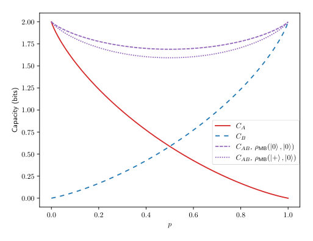
<figcaption class="paper-figure-caption"><b>Fig 1.</b> FIG. 1. Collective and individual two-bit capacities for the states ρMB(|0⟩, |0⟩; p) and ρMB(|+⟩, |0⟩; p). For p = 0, 1, the target is maximally entangled with one of the parties, hence the joint capacity is maximized and equal to that party’s in- dividual capacity. The individual capacities are independent of |ψ⟩and |ϕ⟩, although different choices for these “spectator” states do slightly affect the joint capacity.</figcaption>
</figure>
<figure class="paper-figure-card">
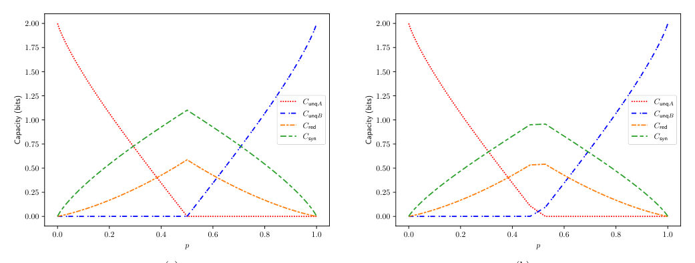
<figcaption class="paper-figure-caption"><b>Fig 2.</b> FIG. 2. C-PID for two instances of the mixed-Bell state. In a) the spectator states are |ψ⟩= |ϕ⟩= |0⟩. The symmetry of this state precludes the possibility of Alice and Bob simultaneously having unique capacity. In b) the spectator states are |ψ⟩= |+⟩ and |ϕ⟩= |0⟩. The asymmetry in this case allows for a range of p values (0.47 ≲p ≲0.52) over which both Alice and Bob have nonzero unique capacity. Note that in this case the state is not invariant under A ↔B and p ↔1 −p, hence the slight asymmetry in the plot.</figcaption>
</figure>
<figure class="paper-figure-card">
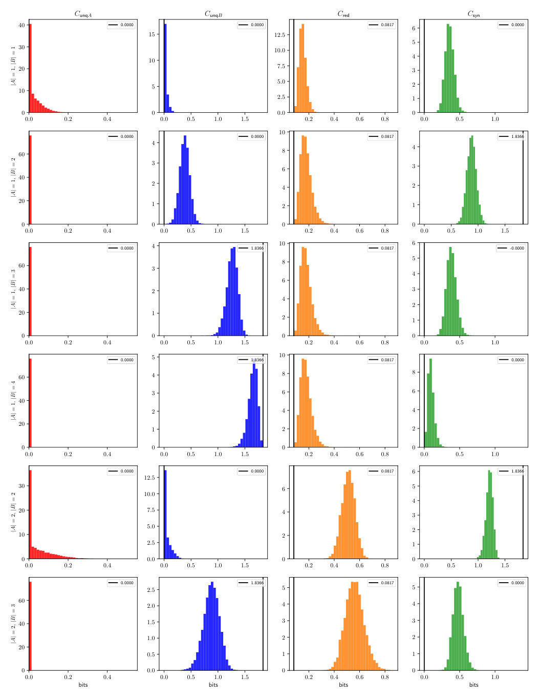
<figcaption class="paper-figure-caption"><b>Fig 3.</b> FIG. 3. Distributions of Cunq, Cred, and Csyn for 10000 random [[5, 1]] encodings for the state given in (33) with λ = 1/3. The corresponding values of the four C-PID quantities for the same partitions of the exact five-qubit code are displayed as vertical lines.</figcaption>
</figure>
<figure class="paper-figure-card">
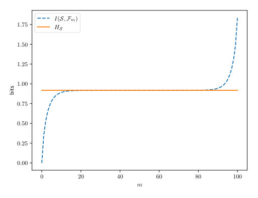
<figcaption class="paper-figure-caption"><b>Fig 4.</b> FIG. 4. Mutual information between system and environ- ment fragment as a function of fragment size with λ = 1/3, sin α = 0.85, and N = 100. For moderately sized fragments (m around 15) the fragment/system mutual information sat- urates at the system entropy. The fragment size needed to reach the plateau is determined by the imperfection parame- ter α.</figcaption>
</figure>
<figure class="paper-figure-card">
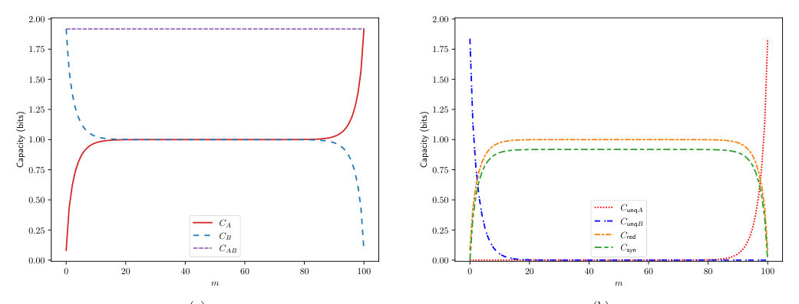
<figcaption class="paper-figure-caption"><b>Fig 5.</b> FIG. 5. a) Collective and individual superdense capacities for the decoherence model as a function of the number of environment qubits in Alice’s possession, with λ = 1/3, sin α = 0.85, and N = 100 environment qubits total. The collective two-bit capacity depends only on the state of the target and not how the environment qubits are partitioned between Alice and Bob. It is maximized for λ = 1/2. As Alice and Bob interact with the target in the same way, their individual two-bit capacities are symmetric under A ↔B and m ↔N −m. b) C-PID for the original decoherence model two-bit capacity. When either party possesses the vast majority of the environment qubits, their information is almost...</figcaption>
</figure>
</div>

<p><strong>Summary.</strong> This work generalizes the concept of decomposing total information into unique, redundant, and synergistic parts for quantum systems. By applying this Quantum PID framework to error correction codes and decoherence models, it reveals fundamental roles: unique information governs error correction, while redundancy is key to understanding how quantum mechanics yields classical reality.</p>
<p><strong>Why it may be interesting.</strong> It provides a rigorous mathematical framework for quantifying how information is encoded, lost, or shared in complex physical processes like decoherence, which is central to understanding quantum-to-classical transitions relevant to AMO physics.</p>
<details>
<summary>Detailed structure</summary>
<p><strong>Main problem.</strong> The paper extends classical Partial Information Decomposition (PID) concepts—unique, redundant, and synergistic information—to quantify these quantities in the quantum domain.</p>
<p><strong>Main result.</strong> It establishes that unique information is central to quantum error correction codes, while redundant information plays a crucial role in describing the decoherence mechanism.</p>
<p><strong>Method.</strong> The analysis uses superdense coding capacity ($C_{AB}$) as the primary tool to define and calculate the quantum PID components for various multipartite states.</p>
<p><strong>Model / system.</strong> The study applies these concepts to Quantum Error Correction (QEC) codes (e.g., bit-flip, five-qubit code) and the decoherence process modeled by environmental interactions.</p>
<p><strong>Key observables.</strong> Unique quantum information ($C_{	ext{unq}}$), redundant capacity ($C_{	ext{red}}$), synergistic capacity ($C_{	ext{syn}}$), and superdense coding capacities ($C_{AB}, C_A, C_B$).</p>
<p><strong>Important parameters / regimes.</strong> The entanglement structure of the state ($\lambda$), the number of supported logical operators ($l_A$), and the interaction parameters in decoherence models.</p>
<p><strong>Assumptions / limitations.</strong> Multiple sensible definitions for quantum PID exist; specific results rely on analyzing pure states or assuming certain code structures (e.g., stabilizer codes).</p>
<p><strong>Figures summary.</strong> Figures illustrate superdense capacities and C-PID components for decoherence models, showing plateaus and dependence on interaction strength; tables summarize capacity combinations for various QEC codes.</p>
<p><strong>Paper structure.</strong> The paper builds from defining the quantum PID using general bipartite states to applying it specifically to QEC codes (analyzing subsets A and B) and finally applying it to the decoherence model to explain classical emergence.</p>
</details>
<details>
<summary>Abstract</summary>
<p>We extend the classical ideas of the Partial Information Decomposition (PID) to the quantum domain and quantify unique, redundant, and synergistic quantum information. We show that unique information plays the central role in quantum error correction codes: any erasure-correctable subset of encoding qubits must contain zero unique information. Synergistic information between two disjoint subsets of encoding qubits appears when a logical operation is supported on the whole set but not on the subsets separately. In a different application of our PID, we show that redundant quantum information is the crucial feature of the decoherence mechanism proposed by Zurek \textit{et al.} to explain how the classical world emerges out of the quantum world.</p>
</details>
<p><sub><a href="#top">↑ back to top</a></sub></p>

<p><a id="paper-2606.09552"></a></p>
<h3 id="scaling-behaviors-of-work-cumulants-in-slow-isothermal-processes"><a href="http://arxiv.org/abs/2606.09552v1">Scaling Behaviors of Work Cumulants in Slow Isothermal Processes</a></h3>
<p><strong>Authors:</strong> Ruohan Xu, Yanbo Qiao, H. T. Quan<br>
<strong>Type:</strong> theory · <strong>Category:</strong> statistical mechanics · <strong>PDF:</strong> <a href="https://arxiv.org/pdf/2606.09552v1">https://arxiv.org/pdf/2606.09552v1</a><br>
<strong>Analysis basis:</strong> full PDF text, analyzed in chunks
<strong>Topic relevance:</strong> 🔥 <code>non-equilibrium universality</code> <strong>4/5</strong> · <code>Keldysh / 2PI / non-Gaussian methods</code> <strong>3/5</strong> · <code>non-equilibrium dynamics</code> <strong>3/5</strong> · <code>correlated / nonlocal dissipation</code> <strong>1/5</strong> · <code>driven-dissipative phase transition</code> <strong>1/5</strong> · <code>methods for driven-dissipative</code> <strong>1/5</strong></p>
<div class="figure-strip-hint">↔ Scroll figures horizontally</div>
<div class="paper-figures-scroll">
<figure class="paper-figure-card">
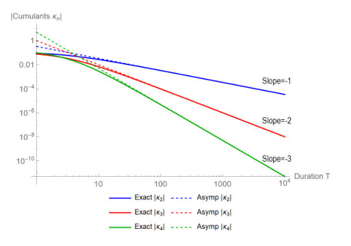
<figcaption class="paper-figure-caption"><b>Fig 1.</b> FIG. 1. Comparison between exact (solid) and asymptotic (dashed) results of case 2. The parameters can be found in the first paragraph of Sec. IV</figcaption>
</figure>
</div>

<p><strong>Summary.</strong> This work derives the universal power-law scaling for higher-order work cumulants ($\kappa_n \propto T^{-(n-1)}$) during slow isothermal processes in gapped quantum systems. Using advanced field theory techniques, it shows these coefficients are determined by equilibrium geometric properties. This establishes a powerful connection between non-equilibrium fluctuations and static thermodynamic geometry.</p>
<p><strong>Why it may be interesting.</strong> This provides rigorous, general results on non-equilibrium thermodynamics far from equilibrium, connecting fluctuation theorems (work cumulants) to underlying geometric structures (thermodynamic tensors) in the slow limit.</p>
<details>
<summary>Detailed structure</summary>
<p><strong>Main problem.</strong> The study focuses on determining the scaling behaviors of work cumulants during slow isothermal processes in gapped quantum systems.</p>
<p><strong>Main result.</strong> The $n$-th cumulant of work ($\kappa_n$) scales universally as $\kappa_n \propto (1/T)^{n-1}$ for large time durations $T$, with coefficients related to equilibrium thermodynamic geometric tensors.</p>
<p><strong>Method.</strong> The analysis employs the Martin-Siggia-Rose-De Dominicis-Janssen (MSRDJ) field theory formalism, utilizing connected correlation functions and perturbation theory.</p>
<p><strong>Model / system.</strong> The system consists of gapped quantum systems driven slowly by time-dependent potentials, modeled via a Langevin equation. The analysis is general for arbitrary smooth protocols but confirmed with examples like the breathing oscillator.</p>
<p><strong>Key observables.</strong> Work cumulants ($\kappa_n$), excess work ($\kappa_2$), and thermodynamic geometric tensors ($K_n$).</p>
<p><strong>Important parameters / regimes.</strong> Slow driving time duration $T$, gap size (required for convergence), and protocol parameters $\lambda(t)$.</p>
<p><strong>Assumptions / limitations.</strong> The derivation fundamentally relies on the existence of a finite mass gap; the scaling breaks down near continuous phase transitions.</p>
<p><strong>Figures summary.</strong> Figure 1 compares exact results with asymptotic predictions for the work cumulants in the slow-driving limit, showing agreement.</p>
<p><strong>Paper structure.</strong> The paper builds from established knowledge regarding excess work ($\kappa_2$) to generalize the scaling law for all $\kappa_n$. It first analyzes a simple linear driving case before generalizing the result using MSRDJ theory for arbitrary smooth protocols.</p>
</details>
<details>
<summary>Abstract</summary>
<p>We study the cumulants of work in a slow isothermal process for gapped systems. Using the Martin-Siggia-Rose-De Dominicis-Janssen (MSRDJ) formalism and the properties of connected correlation functions, we show that in this process, the $n$-th cumulant of work scales as $1/T^{n-1}$ , where $T$ is the time duration. This result holds generally for arbitrary smooth protocols. Furthermore, we derive the coefficients of the cumulants from equilibrium properties. These coefficients are found to be relevant to thermodynamic geometric tensors.</p>
</details>
<p><sub><a href="#top">↑ back to top</a></sub></p>

<p><a id="paper-2606.08606"></a></p>
<h3 id="hidden-conformal-boundary-data-in-finite-temperature-stabilizer-entropy"><a href="http://arxiv.org/abs/2606.08606v1">Hidden Conformal Boundary Data in Finite-Temperature Stabilizer Entropy</a></h3>
<p><strong>Authors:</strong> Reyhaneh Khasseh, M. A. Rajabpour<br>
<strong>Type:</strong> theory · <strong>Category:</strong> statistical mechanics · <strong>PDF:</strong> <a href="https://arxiv.org/pdf/2606.08606v1">https://arxiv.org/pdf/2606.08606v1</a><br>
<strong>Analysis basis:</strong> full PDF text, analyzed in chunks
<strong>Topic relevance:</strong> 🔥 <code>entanglement &amp; information structure</code> <strong>4/5</strong> · <code>non-equilibrium universality</code> <strong>2/5</strong> · <code>Keldysh / 2PI / non-Gaussian methods</code> <strong>1/5</strong> · <code>analog quantum simulation</code> <strong>1/5</strong> · <code>correlated / nonlocal dissipation</code> <strong>1/5</strong> · <code>driven-dissipative phase transition</code> <strong>1/5</strong> · <code>methods for driven-dissipative</code> <strong>1/5</strong> · <code>non-equilibrium dynamics</code> <strong>1/5</strong></p>
<div class="figure-strip-hint">↔ Scroll figures horizontally</div>
<div class="paper-figures-scroll">
<figure class="paper-figure-card">
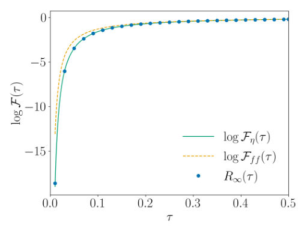
<figcaption class="paper-figure-caption"><b>Fig 1.</b> FIG. 1. Regime-IV crossover in the scaling window β = τL. The blue symbols are finite-size extrapolations of the residual RL(τ) = log SL(τL) −Lf∞+ 1</figcaption>
</figure>
</div>

<p><strong>Summary.</strong> This theoretical work investigates the finite-temperature stabilizer Rényi entropy of open critical spin chains. By mapping this entropy onto a Pfaffian structure, the authors extract universal scaling functions governing thermal crossovers. The key finding is that these functions reveal hidden 'defect-like' boundary conformal data encoded in an eta quotient, providing deeper insights than standard thermodynamic measurements.</p>
<p><strong>Why it may be interesting.</strong> It provides a powerful diagnostic tool—the stabilizer entropy—that can detect subtle, non-trivial defect structures in critical quantum systems that are otherwise masked by standard thermodynamic observables.</p>
<details>
<summary>Detailed structure</summary>
<p><strong>Main problem.</strong> The study aims to determine if the finite-temperature stabilizer Rényi entropy of open critical quantum spin chains reveals hidden conformal boundary data that is invisible to standard thermodynamic measurements.</p>
<p><strong>Main result.</strong> The crossover function governing the finite-size thermal scaling is found to be a level-eight eta quotient, which differs from ordinary free-boundary Majorana factors and signals defect-like boundary information.</p>
<p><strong>Method.</strong> The analysis involves reducing an exponentially large sum over absolute minors of a correlation matrix to a single Pfaffian, allowing for the extraction of universal finite-size scaling functions in specific thermal crossover regimes.</p>
<p><strong>Model / system.</strong> The system studied is the open transverse-field Ising chain at its critical point. The calculations utilize Majorana correlators derived from the Gaussian nature of the thermal Gibbs state and are analyzed across various temperature/size scaling limits.</p>
<p><strong>Key observables.</strong> Stabilizer Rényi entropy ($M_\alpha(
ho)$), the Pfaffian numerator $S_L(eta)$, and the universal crossover function $F(	au)$.</p>
<p><strong>Important parameters / regimes.</strong> The finite-size thermal crossover regime ($eta = 	au L$), the Rényi index $\alpha=1/2$, and the inverse temperature $eta$.</p>
<p><strong>Assumptions / limitations.</strong> The analysis relies on specific gauge choices (staggered Jordan–Wigner gauge) and technical identities relating absolute-minor sums to Pfaffians.</p>
<p><strong>Figures summary.</strong> Figures compare finite-size extrapolations of residual terms against predicted eta-quotient forms, confirming the deviation from ordinary free-boundary benchmarks in the crossover regime.</p>
<p><strong>Paper structure.</strong> The paper systematically analyzes four scaling regimes (fixed T, high T, low T saturation, and $eta=	au L$ crossover), deriving functional forms for the entropy using Pfaffian identities and comparing them to known boundary conformal field theory results.</p>
</details>
<details>
<summary>Abstract</summary>
<p>We study the finite-temperature stabilizer Rényi entropy of the open critical quantum spin chains. At Rényi index one half, this observable probes the distribution of thermal Pauli-string expectation values and can be written as a sum over absolute values of all square minors of a finite-temperature correlation matrix for the transverse-field Ising chain. We show that this exponentially large sum is exactly reducible to a single Pfaffian. The Pfaffian representation reveals a block Toeplitz--Hankel structure and allows us to extract the large-size scaling in several thermal regimes. In the crossover window where the inverse temperature is proportional to the system size, the stabilizer entropy factorizes into a saturated extensive contribution and a universal finite-size scaling function. We find that this scaling function is a level-eight eta quotient, rather than the ordinary free-boundary Majorana thermal factor. The deviation is exponentially hidden at low temperature but controls the high-temperature crossover, where it gives a Cardy-like asymptotic for the Pauli-string expectation-weight spectrum. These results show that finite-temperature stabilizer entropy reveals hidden defect-like conformal data invisible to ordinary thermodynamic probes.</p>
</details>
<p><sub><a href="#top">↑ back to top</a></sub></p>

<p><a id="paper-2606.07825"></a></p>
<h3 id="projected-inverse-iteration-an-eigenvalue-approach-to-ground-state-computation-with-neural-quantum-states"><a href="http://arxiv.org/abs/2606.07825v1">Projected Inverse Iteration: An Eigenvalue Approach to Ground-State Computation with Neural Quantum States</a></h3>
<p><strong>Authors:</strong> Hang Zhang, Victor Armegioiu, Juan Carrasquilla, Siddhartha Mishra, Johannes Müller, Jannes Nys, Marius Zeinhofer<br>
<strong>Type:</strong> theory · <strong>Category:</strong> numerical methods · <strong>PDF:</strong> <a href="https://arxiv.org/pdf/2606.07825v1">https://arxiv.org/pdf/2606.07825v1</a><br>
<strong>Analysis basis:</strong> full PDF text, analyzed in chunks
<strong>Topic relevance:</strong> 🔥 <code>analog quantum simulation</code> <strong>4/5</strong> · <code>exotic spin models in light-matter</code> <strong>3/5</strong> · <code>methods for driven-dissipative</code> <strong>2/5</strong> · <code>correlated cavity matter</code> <strong>1/5</strong> · <code>entanglement &amp; information structure</code> <strong>1/5</strong> · <code>non-equilibrium dynamics</code> <strong>1/5</strong></p>
<div class="figure-strip-hint">↔ Scroll figures horizontally</div>
<div class="paper-figures-scroll">
<figure class="paper-figure-card">
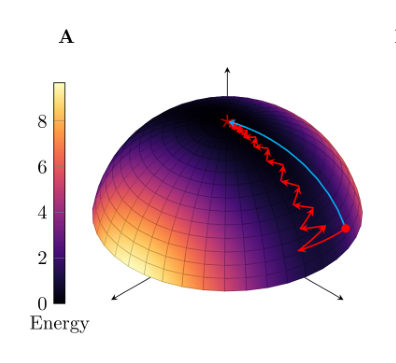
<figcaption class="paper-figure-caption"><b>Fig 1.</b> Fig. 1 Visualization of SR (red) and PII (cyan) for the Hamiltonian ˆH = diag(1, 10, 0) and a linear normalized state vector on the sphere S. Figure A visualizes the optimization dynamics on the sphere, and Figure B shows the corresponding energy error. PII converges in essentially a single step for the shift value τ = 10−8. SR with learning rate η = 0.1 converges slowly with oscillating iterates, due to the large eigenvalue spread (Γ = 10) and the small spectral gap (∆= 1).</figcaption>
</figure>
<figure class="paper-figure-card">
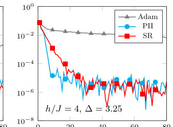
<figcaption class="paper-figure-caption"><b>Fig 2.</b> Fig. 2 Spectral-gap dependence distinguishes PII from SR. A, Optimization trajectories for the 4 × 4 TFIM in a regime with a small spectral gap (h/J = 2, ∆= 0.015), plotted as relative error ε versus iteration for PII, SR and Adam, where ε = |(EViT −EED) /EED|. All runs use the same number of Monte Carlo samples (M = 32,768) and a positive real-valued ViT ansatz (4 layers, hidden dimension d = 20, and h = 2 heads). PII uses a learning rate η = 1.0 and Tikhonov regularization λ = 0.01, whereas SR uses η = 0.01 and λ = 10−4. Adam is included as a standard first-order baseline, with its best learning rate η = 0.01. B, The same comparison in a larger-gap regime (h/J = 4, ∆= 3.25). PII shows...</figcaption>
</figure>
<figure class="paper-figure-card">
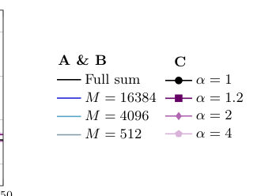
<figcaption class="paper-figure-caption"><b>Fig 3.</b> Fig. 3 Shift undershooting stabilizes PII in a quasi-degenerate TFIM. Relative ground- state energy error versus iteration for the 4×4 TFIM at h/J = 2. A, Without undershooting (τ = E0), Monte Carlo noise prevents PII from converging for small batch sizes (M = 512 and M = 4096). B, With undershooting (τ = 1.2 E0), trajectories stay stable across batch sizes. C, In the noise-free full-sum limit, sweeping τ = αE0 follows the predicted contraction rPII, showing a direct trade-off between robustness and speed. All trajectories use λ = 0.1 and η = 1.0. All results are produced with a real-valued RBM ansatz (hidden-variable density α = 4 [6]).</figcaption>
</figure>
<figure class="paper-figure-card">
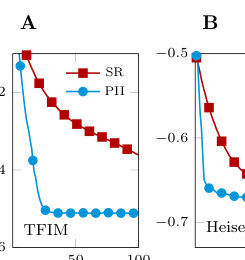
<figcaption class="paper-figure-caption"><b>Fig 4.</b> Fig. 4 PII acceleration at large 10 × 10 lattices. Energy per site during the optimization, comparing SR and PII for three canonical 2D spin- 1</figcaption>
</figure>
</div>

<p><strong>Summary.</strong> This paper introduces Projected Inverse Iteration (PII) as an advanced eigenvalue approach for finding the ground state energy using Neural Quantum States. PII reframes the problem to leverage classical inverse iteration, which is shown to be robust and fast even when the system has small spectral gaps. It provides a superior alternative to standard gradient descent methods like Stochastic Reconfiguration for complex quantum simulations.</p>
<p><strong>Why it may be interesting.</strong> For AMO physicists working with complex Hamiltonians or open quantum systems where ground state properties are key, this offers a robust numerical tool that bypasses the known limitations of gradient-based optimization methods in near-degenerate regimes.</p>
<details>
<summary>Detailed structure</summary>
<p><strong>Main problem.</strong> The primary challenge is efficiently optimizing variational wavefunctions (Neural Quantum States) to find the ground state energy of quantum many-body systems.</p>
<p><strong>Main result.</strong> Projected Inverse Iteration (PII) achieves rapid, gap-insensitive convergence for ground-state finding, significantly outperforming standard gradient methods like Stochastic Reconfiguration (SR) when spectral gaps are small.</p>
<p><strong>Method.</strong> The authors reframe the ground-state search as an eigenvalue problem and adapt classical inverse iteration by projecting the update direction onto the finite-dimensional tangent space of the variational manifold.</p>
<p><strong>Model / system.</strong> The methods are tested on challenging two-dimensional spin systems, including the highly frustrated J1-J2 model and the Transverse-Field Ising Model (TFIM).</p>
<p><strong>Key observables.</strong> Convergence rate ($
ho$), relative error ($\epsilon$), ground state energy ($E_0$), spectral gap ($\Delta = E_1 - E_0$), and spectral spread ($\Gamma$).</p>
<p><strong>Important parameters / regimes.</strong> The choice of energy shift parameter ($ au$) and the regularization strength ($\lambda$) are critical hyperparameters.</p>
<p><strong>Assumptions / limitations.</strong> The analysis relies on deriving algorithms from non-parametric functional settings, though practical implementation uses Galerkin projection onto the tangent space defined by neural network parameters.</p>
<p><strong>Figures summary.</strong> Figures compare PII's superior convergence speed and gap insensitivity against SR's degradation when spectral gaps are small; other figures illustrate the effect of energy shifts ($  au$) on stability.</p>
<p><strong>Paper structure.</strong> The paper establishes the problem (NQS optimization), introduces PII as an eigenvalue approach, provides theoretical convergence bounds for both PII and SR based on Riemannian geometry, and validates PII's superior performance across various physical models.</p>
</details>
<details>
<summary>Abstract</summary>
<p>Deep learning offers a powerful approach to quantum many-body problems via neural network wavefunctions, but their optimization remains a severe bottleneck. Existing optimization methods, including natural gradient descent and stochastic reconfiguration, suffer from spectral gap-dependent convergence that limits their effectiveness on systems fraught with competing orders and nearly degenerate ground states, such as frustrated magnets and strongly correlated electron materials. Here, we introduce Projected Inverse Iteration (PII) by re-framing the ground-state search as an eigenvalue problem. PII achieves rapid, gap-insensitive convergence while preserving the favorable polynomial computational scaling of stochastic reconfiguration. Demonstrated on challenging two-dimensional spin systems, including the highly frustrated $J_1$-$J_2$ model, PII outperforms standard optimization techniques and presents a promising algorithmic strategy for discovering complex quantum states in the presence of small spectral gaps. More broadly, PII can be interpreted as a novel natural gradient method tailored for eigenvalue problems, opening up its application to related challenges within deep learning.</p>
</details>
<p><sub><a href="#top">↑ back to top</a></sub></p>

<p><a id="paper-2606.08510"></a></p>
<h3 id="topological-bound-states-in-the-continuum-with-controllable-multiplicity"><a href="http://arxiv.org/abs/2606.08510v1">Topological bound states in the continuum with controllable multiplicity</a></h3>
<p><strong>Authors:</strong> Ya-Ping Lou, Wei Jia<br>
<strong>Type:</strong> theory · <strong>Category:</strong> other · <strong>PDF:</strong> <a href="https://arxiv.org/pdf/2606.08510v1">https://arxiv.org/pdf/2606.08510v1</a><br>
<strong>Analysis basis:</strong> full PDF text, analyzed in chunks
<strong>Topic relevance:</strong> 🔥 <code>analog quantum simulation</code> <strong>4/5</strong> · <code>driven-dissipative phase transition</code> <strong>2/5</strong> · <code>Frenkel-Kontorova</code> <strong>1/5</strong> · <code>Keldysh / 2PI / non-Gaussian methods</code> <strong>1/5</strong> · <code>correlated / nonlocal dissipation</code> <strong>1/5</strong> · <code>entanglement &amp; information structure</code> <strong>1/5</strong> · <code>methods for driven-dissipative</code> <strong>1/5</strong> · <code>non-equilibrium dynamics</code> <strong>1/5</strong></p>
<div class="figure-strip-hint">↔ Scroll figures horizontally</div>
<div class="paper-figures-scroll">
<figure class="paper-figure-card">

<figcaption class="paper-figure-caption"><b>Fig 1.</b> FIG. 1. (a) Schematic diagram of generalized 3D breathing pyrochlore lattice when taking M = 4. (b) The Brillouin zone of Hamiltonian (1), where Γ = (0, 0, 0), X = (2π, 0, 0), W = (2π, 0, π), U = (2π, π/2, π/2), L = (π, π, π) and K = (3π/2, 0, 3π/2) are six high symmetry points. (c) Band structures along Γ-X-W-U-L-K-Γ line for M = 1 with t0 = 0.1t1, M = 2 with (t0/t1, t2/t1) = (0.1, 0.1), and M = 3 with (t0/t1, t2/t1, t3/t1) = (0.1, 0.1, 0.1). (d)-(h) The kx,y,z-OBC energy spectrum when taking M = 2 and t0 = 0.1t1, where the system size is 15 × 15 × 15. The insets give the real-space distributions of zero-energy states for (e) t2 = −0.3t1, (f) t2 = −2t1, (g) t2 = −t1, and (h) t2 = 1.2t1.</figcaption>
</figure>
<figure class="paper-figure-card">

<figcaption class="paper-figure-caption"><b>Fig 2.</b> FIG. 2. Numerical results of topological charges, charge po- larizations, and polarized topological charges for (a) t2 = −t1 and (b) t2 = 1.2t1, giving W = 1 and W = 8, respectively. The other parameters are t0 = 0.1t1 and M = 2.</figcaption>
</figure>
<figure class="paper-figure-card">

<figcaption class="paper-figure-caption"><b>Fig 3.</b> FIG. 3. (a) Topological phase diagram determined by W, where the shaded regions mark the metallic phase. Three distinct phase boundaries correspond to the bulk gap clos- ing at Γ (pink), X (black), and certain non-high-symmetry point (blue), respectively. (b1)-(d1) The band structures with (t2/t1, t3/t1) = (−1.1, 0), (0.9, 0), and (−1, 1.1). (b2)-(d2) The distribution of polarized topological charges in the BZ. The green circles denote these polarized topological charges be located at the Γ, L and X points. The other parameters are t0 = 0.1t1 and M = 3.</figcaption>
</figure>
</div>

<p><strong>Summary.</strong> This paper introduces a theoretical framework to study corner-localized topological Bound States in the Continuum within a 3D pyrochlore lattice model. By developing an effective edge theory and using polarized topological charges, the authors demonstrate that these states can be controlled in number and characterized through distinct phase transitions. This work opens a pathway for experimentally realizing and understanding highly robust localized quantum states.</p>
<p><strong>Why it may be interesting.</strong> This work is highly relevant because it applies topological concepts (like winding numbers and protected states) to a complex, realistic lattice geometry (pyrochlore), providing concrete theoretical tools for engineering exotic quantum phenomena in solid-state or photonic systems.</p>
<details>
<summary>Detailed structure</summary>
<p><strong>Main problem.</strong> The primary challenge addressed is realizing and theoretically characterizing corner-localized topological Bound States in the Continuum (BICs) within a three-dimensional lattice structure, especially controlling their multiplicity.</p>
<p><strong>Main result.</strong> The authors propose that these BICs can emerge in a generalized breathing pyrochlore lattice, demonstrating that their number can be arbitrarily tuned by modifying inter-cell hopping parameters. They also characterize three distinct types of topological phase transitions associated with bulk gap closing mechanisms.</p>
<p><strong>Method.</strong> The study employs advanced theoretical techniques including deriving effective 1D edge Hamiltonians (resembling SSH models) and utilizing 'polarized topological charges' to provide a robust, measurable characterization of the corner states in momentum space.</p>
<p><strong>Model / system.</strong> The model is based on a generalized breathing pyrochlore lattice structure, analyzed using fermionic annihilation operators for unit cells. The Hamiltonian is constructed using shift operators ($\delta^m_s$) and involves various inter-cell hopping terms ($t_0, t_m$).</p>
<p><strong>Key observables.</strong> Polarized topological charges (nodal points in the BZ), total winding number ($W$), zero-energy corner states, and the identification of three types of Topological Phase Transitions (TPTs).</p>
<p><strong>Important parameters / regimes.</strong> Inter-cell hopping parameters ($t_m$) are crucial for tuning the BIC multiplicity; the analysis is sensitive to the specific high-symmetry points ($\Gamma$, X, L) where bulk gaps close.</p>
<p><strong>Assumptions / limitations.</strong> The derivation relies on assuming Bloch-type wave functions for edge/hinge modes and establishing boundary conditions for semi-infinite chains. The model suggests implementability in artificial systems like photonic crystals.</p>
<p><strong>Figures summary.</strong> Figures illustrate the lattice structure, band dispersions showing flat bands becoming dispersive, energy spectra confirming zero-energy corner states, and phase diagrams mapping out parameter regimes corresponding to different topological invariants ($W$).</p>
<p><strong>Paper structure.</strong> The paper progresses from identifying the physical challenge (corner BICs) to proposing a mathematical framework using edge theory. It details Hamiltonian construction via shift operators, derives effective 1D models for edges/corners, and finally uses polarized charges to map out the phase diagram and classify TPTs.</p>
</details>
<details>
<summary>Abstract</summary>
<p>Bound states in the continuum (BICs) are spatially localized states embedded in the continuous spectrum without hybridizing with extended bulk modes. Recent advances in topological band theory have greatly enriched the understanding of BICs, which gives rise to boundary-localized topological BICs with extremely high robustness against disorders. However, there remains a challenge in realizing corner-localized topological BICs in a three-dimensional system due to the absence of both realistic theoretical models and effective topological characterization schemes. In particular, how to engineer a controllable number of corner-localized topological BIC is still an open question. Here, we propose that the corner-localized topological BICs can emerge in a class of generalized breathing pyrochlore lattice with general inter-cell hoppings. We further show that the number of BICs at each corner can be arbitrarily adjusted by changing the parameters of inter-cell hoppings. Remarkably, although these corner-localized topological BICs are intertwined with a substantial number of bulk modes, we can accurately characterize them through the polarized topological charges, which are nodal points with topological properties in Brillouin zone and are measurable in experiments. We also reveal three types of topological phase transitions of corner-localized BICs, which are associated with the different ways of closing the bulk energy gap and can be intuitively captured by the polarized topological charges. This work not only promotes the theoretical research of corner-localized topological BICs, but also opens an avenue for their experimental observation in the future.</p>
</details>
<p><sub><a href="#top">↑ back to top</a></sub></p>

<p><a id="paper-2606.08453"></a></p>
<h3 id="a-dual-metastable-state-encoding-architecture-for-quantum-processing-with-math294math-atom-arrays"><a href="http://arxiv.org/abs/2606.08453v1">A Dual Metastable-State Encoding Architecture for Quantum Processing with $^{171}\mathrm{Yb}$ Atom Arrays</a></h3>
<p><strong>Authors:</strong> Chun-Wei Liu, Saiwei Nie, Eesha Banerjee, Micah Davidson, Nick Reynolds, Alyssa L. Miller, Alex P. Burgers<br>
<strong>Type:</strong> theory · <strong>Category:</strong> quantum information and computing · <strong>PDF:</strong> <a href="https://arxiv.org/pdf/2606.08453v1">https://arxiv.org/pdf/2606.08453v1</a><br>
<strong>Analysis basis:</strong> full PDF text, analyzed in chunks
<strong>Topic relevance:</strong> 🔥 <code>QC/QI experiment</code> <strong>4/5</strong> · <code>quantum measurements</code> <strong>3/5</strong> · <code>measurement-induced transitions</code> <strong>2/5</strong> · <code>Rydberg arrays</code> <strong>1/5</strong> · <code>methods for driven-dissipative</code> <strong>1/5</strong></p>
<div class="figure-strip-hint">↔ Scroll figures horizontally</div>
<div class="paper-figures-scroll">
<figure class="paper-figure-card">

<figcaption class="paper-figure-caption"><b>Fig 1.</b> FIG. 1. Dual-metastable state qubit encoding in a neutral atom processor. a. Qubits are encoded in the two metastable manifolds of 171Yb: hyperfine (HF) qubits in the (6s6p) 3P2 manifold and nuclear spin (NS) qubits in the (6s6p) 3P0 manifold. Both manifolds have single-photon coupling to the (6sns) 3S1 Rydberg manifold. The (6s7s) 3S1 manifold provides an intermediate state for single-qubit operations in the HF subspace and coherent shelving to the NS subspace. The (6s5ds)3D3 manifold provides a non-destructive readout channel via a 1798 nm cycling transition. b. Processor architecture based on this encoding: the arithmetic block utilizes NS qubits for algorithmic operations, and the QEC...</figcaption>
</figure>
<figure class="paper-figure-card">

<figcaption class="paper-figure-caption"><b>Fig 2.</b> FIG. 2. Optical trapping and imaging in the 3P2 man- ifold. a. The readout of HF qubits is achieved by selectively imaging |0⟩HF through 3D3, F = 7/2, mF = −7/2 at 1798 nm. b. In 532 nm tweezers, the (6s5d) 3D3 manifold is anti- trapped, requiring a pulsed imaging protocol to avoid atom heating [43]. c. Additionally, we investigate trapping in 850 nm tweezers, where the 3D3 manifold is trapped. The imaging process can be interleaved with polarization gradient cooling (PGC) to compensate for heating due to the differential trap depth between 3P2 and 3D3. d-e. We estimate the coherence time of HF qubits (initialized in |0⟩HF) to be T1 = 1.78 s in 532 nm tweezers and T1 = 1.44 s in 850 nm...</figcaption>
</figure>
<figure class="paper-figure-card">

<figcaption class="paper-figure-caption"><b>Fig 3.</b> FIG. 3. Single-qubit operation of 3P2 hyperfine qubits. a. Level structure and Raman coupling scheme for imple- menting single-qubit operations within the 3P2 manifold. The qubit states |0⟩HF and |1⟩HF are coupled via the intermediate 3S1, F ′ = 3/2, mF ′ = −3/2 state using a two-photon Raman transition. b. Scattering error as a function of the two-photon de- tuning ∆QB with fixed Raman beam powers. To calculate the error, we include Raman and Rayleigh scattering, differential light shifts, and Doppler effects (See Appendix B 1). The inset shows the corresponding Rabi oscillations for ∆QB = 2π×20 GHz and ΩQB = 2π × 2 MHz. We select an operating point that balances scattering error and...</figcaption>
</figure>
<figure class="paper-figure-card">

<figcaption class="paper-figure-caption"><b>Fig 4.</b> FIG. 4. Coherent shelving between 3P2 and 3P0 manifolds. a. Level structure and Raman coupling scheme used for the coherent shelving (CS) process. The two Raman pathways, CS|0⟩and CS|1⟩, are modeled using a pair of 770 nm beams detuned by ∆HF = 2π × 6.7 GHz, with an additional nuclear-spin splitting ∆N = 2π × 11.5 kHz, and a single 649 nm beam under a magnetic field B = 10 G. These pathways coherently couple |0⟩HF ↔|0⟩NS and |1⟩HF ↔|1⟩NS via the 3S1 manifold. b. The scattering error as a function of the two-photon detuning ∆CS is computed for a fixed Raman beam power, which yields the Rabi frequency ΩCS = Ω|0⟩ CS = Ω|1⟩ CS = 2π × 2 MHz at ∆CS = 2π × 20 GHz (Detailed in Appendix B 1). Insets...</figcaption>
</figure>
<figure class="paper-figure-card">

<figcaption class="paper-figure-caption"><b>Fig 5.</b> FIG. 5. Implementing CZ gate in the 3P2 manifold. a. We selectively couple |1⟩HF = 3P2, F = 3/2, mF = −3/2 to the Rydberg state |r⟩ ≡ |v = 54.28, L = 0, F = 1/2, mF = −1/2⟩with a σ+ polarized beam at 326 nm and assume the interatomic spacing to be 2.5 µm. The estimated interaction energy at this spacing is V = h × 100 MHz [69]. b. The time-optimal phase gate design (brown solid line) is modeled assuming a smooth-step amplitude function (purple solid line) with peak Rabi fre- quency Ωr = 2π × 1.5 MHz. The same state and approach is utilized in Refs. [43, 64]. The resulting time evolution tra- jectory of the qubit subspace {01, 0r} and {11, W} is shown on the Bloch sphere, where |W⟩HF =...</figcaption>
</figure>
</div>

<p><strong>Summary.</strong> The paper proposes a novel dual metastable-state qubit encoding in $^{171}\mathrm{Yb}$ atoms to create a robust platform for quantum computation. By utilizing two distinct atomic manifolds ($3P_0$ and $3P_2$), the system can logically separate computational tasks into an ALU and a QEC block. This architecture enables high-fidelity, parallel operations necessary for scaling towards fault-tolerant quantum computing.</p>
<p><strong>Why it may be interesting.</strong> This work is highly relevant as it directly addresses the engineering challenge of building fault-tolerant quantum computers using neutral atoms, providing concrete architectural guidelines for integrating complex control sequences like mid-circuit measurement.</p>
<details>
<summary>Detailed structure</summary>
<p><strong>Main problem.</strong> The challenge is developing a scalable, fault-tolerant quantum processing architecture using neutral atoms that efficiently integrates mid-circuit measurements and fast qubit operations.</p>
<p><strong>Main result.</strong> The proposed dual metastable-state encoding for $^{171}\mathrm{Yb}$ allows the system to partition into distinct Arithmetic Logic Unit (ALU) and Quantum Error Correction (QEC) blocks, enabling parallel operation and achieving high gate fidelities.</p>
<p><strong>Method.</strong> The authors simulate quantum dynamics using master equations and perform resource estimation by mapping logical circuits onto the physical hardware architecture.</p>
<p><strong>Model / system.</strong> The system uses $^{171}\mathrm{Yb}$ atoms trapped in optical tweezers, encoding qubits across two metastable manifolds: a long-coherence Nuclear Spin (NS) qubit in the $3P_0$ manifold and a fast Hyperfine (HF) qubit in the $3P_2$ manifold.</p>
<p><strong>Key observables.</strong> Single-qubit gate fidelities ($F_{QB} \approx 99.9\%$), coherent shelving fidelity ($  ilde{F}_{CS} \approx 99.9\%$), and logical error rates as a function of code distance.</p>
<p><strong>Important parameters / regimes.</strong> Hyperfine splitting $\Delta_{\mathrm{HF}} = 2\pi 	imes 6.7~\mathrm{GHz}$; coherence times up to $1.78$ s; two-qubit gate infidelity $<0.3\%$.</p>
<p><strong>Assumptions / limitations.</strong> The architecture assumes that separating the functional blocks (ALU/QEC) into distinct metastable manifolds minimizes latency associated with atom movement.</p>
<p><strong>Figures summary.</strong> Figures illustrate the dual-metastable state encoding, the partitioning of the processor into ALU and QEC zones, and resource estimation comparing different scheduling strategies for syndrome extraction.</p>
<p><strong>Paper structure.</strong> The paper introduces the physical platform and the dual-manifold encoding. It details gate operations (single-qubit gates in $3P_2$, coherent shelving between manifolds) followed by a comprehensive architectural analysis comparing resource usage and logical error rates based on how the two manifolds are assigned to computational roles.</p>
</details>
<details>
<summary>Abstract</summary>
<p>Neutral-atom arrays combine scalable qubit registers, long coherence times, flexible optical control, and strong Rydberg-mediated entangling interactions, making them a promising platform for quantum information processing. However, physical error rates remain a challenge, and fault-tolerant quantum error correction (QEC) requires repeated mid-circuit measurement and reset of ancilla qubits without disturbing nearby data qubits. This requirement introduces significant control and architectural overhead, making qubit encoding an important architectural decision. Here, we propose a dual metastable-state qubit encoding for $^{171}\mathrm{Yb}$ atoms that utilizes two independent qubit subspaces in the $(6s6p)\,{}^3\mathrm{P}_0$ and $(6s6p)\,{}^3\mathrm{P}_2$ manifolds. The ${}^3\mathrm{P}_0$ manifold provides a long-coherence nuclear-spin (NS) qubit suitable for storage and arithmetic operations, while the ${}^3\mathrm{P}_2$ manifold provides a hyperfine-spin (HF) qubit, with $Δ_{\mathrm{HF}} = 2π\times 6.7~\mathrm{GHz}$, that enables fast Raman operations and direct state-selective imaging. Coherent shelving between the two metastable manifolds connects the qubit subspaces, allowing operations to be assigned to spectrally distinct processor zones. We simulate single-qubit and two-qubit gate fidelities in ${}^3\mathrm{P}_2$, as well as coherent shelving between the HF and NS qubit subspaces. We incorporate these physical-level estimates into an architectural resource estimation and logical-level simulation. Our approach integrates mid-circuit measurements and fast qubit operations within a single-species platform, providing a versatile framework for future fault-tolerant quantum computing with neutral-atom qubits.</p>
</details>
<p><sub><a href="#top">↑ back to top</a></sub></p>

<p><a id="paper-2606.09179"></a></p>
<h3 id="designing-electronic-magnetoelectric-matter-with-organic-quantum-spin-trimers"><a href="http://arxiv.org/abs/2606.09179v1">Designing electronic magnetoelectric matter with organic quantum spin trimers</a></h3>
<p><strong>Authors:</strong> Yuko Hosokoshi, Christopher P. Aoyama, Zhuowei Zhang, Toshio Ono, Kosuke Takada, Ayaka Higashiguchi, Seitaro Iisaka, Koudai Yamasaki, Hironori Yamaguchi, Shengzhi Zhang, Mohammad Irfan, Minseong Lee, Eun Sang Choi, Yasuyuki Shimura, Toshiro Sakakibara, Zhiyuan Xie, Hiroki Nakano, Yasu Takano, Cristian D. Batista, Yoshitomo Kamiya<br>
<strong>Type:</strong> both · <strong>Category:</strong> strongly correlated electrons · <strong>PDF:</strong> <a href="https://arxiv.org/pdf/2606.09179v1">https://arxiv.org/pdf/2606.09179v1</a><br>
<strong>Analysis basis:</strong> full PDF text, analyzed in chunks
<strong>Topic relevance:</strong> 🔥 <code>analog quantum simulation</code> <strong>4/5</strong> · <code>exotic spin models in light-matter</code> <strong>3/5</strong> · <code>Keldysh / 2PI / non-Gaussian methods</code> <strong>1/5</strong> · <code>entanglement &amp; information structure</code> <strong>1/5</strong> · <code>methods for driven-dissipative</code> <strong>1/5</strong> · <code>spintronics-quantum-optics interface</code> <strong>1/5</strong></p>
<div class="figure-strip-hint">↔ Scroll figures horizontally</div>
<div class="paper-figures-scroll">
<figure class="paper-figure-card">

<figcaption class="paper-figure-caption"><b>Fig 1.</b> FIG. 1. Spin, effective orbital degrees of freedom, and the emergent electric dipole in a quantum spin trimer. a, A spin- 1/2 Heisenberg trimer hosts a fourfold-degenerate 𝜏= 1</figcaption>
</figure>
<figure class="paper-figure-card">

<figcaption class="paper-figure-caption"><b>Fig 2.</b> FIG. 2. Experimental realization of quantum spin trimers and the measured phase diagram. a, Unit cell structure of TNN·CH3CN, composed of alternating (P)- and (M)-TNN layers of equilateral spin trimers formed by spin-1/2 nitronyl nitroxide (NN) radicals. In each NN radical, the unpaired-electron wavefunction is distributed primarily over the O–N–C–N–O moiety [11]. Spheres and short vertical bars in the main panel represent NN radicals and CH3CN molecules, respectively. b, Trimerized triangular-lattice model for TNN·CH3CN, in which the two trimerization patterns in alternating layers represent the enantiomeric (P)- and (M)-TNN layers. The inset illustrates the minimal interlayer coupling...</figcaption>
</figure>
<figure class="paper-figure-card">

<figcaption class="paper-figure-caption"><b>Fig 3.</b> FIG. 3. Magnetic, thermodynamic, and dielectric signatures of field-induced magnetoelectric phases of TNN·CH3CN. a, Magnetization as a function of 𝐻at 𝑇= 0.13 K, showing the 1/3-magnetization plateau between 𝐻&lt; 1/3 = 1.2 T and 𝐻&gt; 1/3 = 8.5 T and saturation at 𝐻sat = 11.2 T. Exact diagonalization (ED) data for 𝐽0 = 7.8 K and 𝐽𝑎𝑏/𝐽0 = 0.12 (𝐽𝑐= 0) are overlaid. The three magnetic-field regimes below the saturation field 𝐻sat—low-field (LF), plateau, and high-field (HF)—are indicated above the panel. b, Magnetic specific heat 𝐶mag and entropy 𝑆mag at 𝐻= 0, compared with ED data at finite temperatures. c, Magnetic-torque response measured with a capacitive cantilever at various temperatures. d,...</figcaption>
</figure>
<figure class="paper-figure-card">

<figcaption class="paper-figure-caption"><b>Fig 4.</b> FIG. 4. Theoretical characterization of magnetic-field-dependent magnetoelectric (ME) phases in TNN·CH3CN. a, Monte Carlo phase diagram showing distinct field-dependent regimes, with the polarization 𝑃≡⟨ˆ𝑃2⟩1/2 displayed in the background. The corresponding low- energy descriptions are summarized below, linking each field regime to its effective degrees of freedom. b, Low-field spin–orbital-entangled (SOE) 120◦state, where coupled spin–orbital degrees of freedom induce the ME response. c, Ferroelectrically-stacked three-dimensional layer-dipole order predicted in the 1/3-magnetization plateau for the minimal interlayer coupling 𝐽𝑐. d, High-field Bose–Einstein-condensed (BEC) hole states...</figcaption>
</figure>
<figure class="paper-figure-card">

<figcaption class="paper-figure-caption"><b>Fig 5.</b> FIG. 5. Tensor-network confirmation of robust in-plane orbital order in the 1/3-magnetization plateau regime. A finite-𝐷analysis of the orbital order parameter at ℎ= 2.0𝐽𝑎𝑏(inset: finite-𝜒analy- sis), performed using the projected entangled simplex state (PESS) ansatz [16] for the 2D trimerized triangular lattice (𝐽𝑐= 0), confirms the robustness of the orbital order. Here, 𝐷is the bond dimension of the tensor-network ansatz and 𝜒is the environment bond dimension. The 𝐷= 1 result corresponds to the polarized product state obtained from the mean-field calculation.</figcaption>
</figure>
</div>

<p><strong>Summary.</strong> The research proposes that quantum spin trimers can serve as fundamental building blocks for magnetoelectric materials by generating electric dipoles intrinsically linked to magnetic moments. By analyzing the system in different external field regimes, the authors map out complex phase diagrams showing how geometric frustration stabilizes collective ME order. This provides a bottom-up design principle connecting electronic structure to macroscopic multiferroic properties.</p>
<p><strong>Why it may be interesting.</strong> This work is highly relevant as it bridges concepts from quantum magnetism, orbital physics, and emergent phenomena. The explicit derivation of ME coupling from electronic correlations within a well-defined cluster (the trimer) provides a powerful paradigm for designing novel correlated materials.</p>
<details>
<summary>Detailed structure</summary>
<p><strong>Main problem.</strong> To design electronic magnetoelectric (ME) materials by utilizing quantum spin trimers, establishing a bottom-up route that avoids conventional spin-lattice coupling mechanisms.</p>
<p><strong>Main result.</strong> The study demonstrates that geometrically frustrated interactions organize electronically generated trimer dipoles into collective ME states, leading to multiple field-induced phases like the 1/3-magnetization plateau.</p>
<p><strong>Method.</strong> A combination of advanced theoretical modeling (effective Hamiltonians, tensor networks, Monte Carlo simulations) and detailed experimental characterization (magnetization, dielectric measurements) is employed.</p>
<p><strong>Model / system.</strong> The system is a weakly coupled lattice of equilateral S=1/2 quantum spin trimers realized in the organic radical crystal TNN·CH3CN. The physics is governed by strong correlations modeled via Hubbard-type Hamiltonians and effective low-energy descriptions like the Kugel–Khomskii model.</p>
<p><strong>Key observables.</strong> Magnetization M(H), dielectric susceptibility $\Delta\epsilon(H)$, specific heat $C_{	ext{mag}}$, and various order parameters ($\langle \hat{	au} 
angle$, staggered magnetization).</p>
<p><strong>Important parameters / regimes.</strong> The strong-coupling limit ($U \gg t_0$), the magnetic field strength (defining Low-Field, Plateau, High-Field regimes), and interlayer coupling constants ($J'_c, J''_c$).</p>
<p><strong>Assumptions / limitations.</strong> The analysis relies on projecting onto low-energy subspaces (e.g., $S=1/2 \otimes 	au=1/2$) and assumes the existence of weakly coupled trimers exhibiting emergent electronic dipoles.</p>
<p><strong>Figures summary.</strong> Figures illustrate the ME phase diagram, schematic representations of dipole formation via frustration relief, and computational results confirming orbital order in specific field regimes using tensor-network methods.</p>
<p><strong>Paper structure.</strong> The paper progresses from establishing the fundamental mechanism (emergent trimer dipoles) to developing effective Hamiltonians for different field regimes (SOE $ o$ Plateau $    o$ Hole BEC), culminating in detailed theoretical predictions validated against comprehensive experimental measurements on TNN·CH3CN.</p>
</details>
<details>
<summary>Abstract</summary>
<p>Magnetoelectric (ME) phenomena are commonly driven by spin-lattice coupling. Here we demonstrate a different route based on frustrated quantum spin trimers that intrinsically intertwine magnetic moments and electric dipoles. Using molecular design principles, we realize a weakly coupled lattice of equilateral $S=1/2$ spin trimers in the organic radical crystal TNN$\cdot$CH$_3$CN. In this material, correlated electronic fluctuations within each trimer generate electric dipoles, while geometrically frustrated intertrimer interactions organize them into collective ME states. Magnetization, thermodynamic, and dielectric measurements reveal multiple magnetic-field-induced phases, including the $1/3$-magnetization plateau marked by pronounced dielectric anomalies. Effective low-energy theories and numerical simulations show that these phenomena are driven by electronically generated trimer dipoles whose collective order is stabilized by frustration relief of the intertrimer interactions, establishing a direct connection between geometric frustration and emergent magnetoelectricity. Our results identify quantum spin trimers as multifunctional building blocks, providing a bottom-up route for designing correlated ME materials from electronically active quantum spin clusters.</p>
</details>
<p><sub><a href="#top">↑ back to top</a></sub></p>

<p><a id="paper-2606.09636"></a></p>
<h3 id="the-map-of-parameter-space-in-double-microwave-shielding"><a href="http://arxiv.org/abs/2606.09636v1">The Map of Parameter Space in Double Microwave Shielding</a></h3>
<p><strong>Authors:</strong> Hubert J. Jóźwiak, Ian Stevenson, Sebastian Will, Tijs Karman<br>
<strong>Type:</strong> theory · <strong>Category:</strong> other · <strong>PDF:</strong> <a href="https://arxiv.org/pdf/2606.09636v1">https://arxiv.org/pdf/2606.09636v1</a><br>
<strong>Analysis basis:</strong> full PDF text, analyzed in chunks
<strong>Topic relevance:</strong> 🔥 <code>analog quantum simulation</code> <strong>4/5</strong> · <code>methods for driven-dissipative</code> <strong>2/5</strong> · <code>non-equilibrium dynamics</code> <strong>2/5</strong> · <code>Keldysh / 2PI / non-Gaussian methods</code> <strong>1/5</strong> · <code>correlated / nonlocal dissipation</code> <strong>1/5</strong> · <code>driven-dissipative phase transition</code> <strong>1/5</strong></p>
<div class="figure-strip-hint">↔ Scroll figures horizontally</div>
<div class="paper-figures-scroll">
<figure class="paper-figure-card">

<figcaption class="paper-figure-caption"><b>Fig 1.</b> FIG. 1. Two-body loss rates as a function of the applied mi- crowave field strength for single (a) and double (b) microwave shielding. The universal dimensionless parameters, ˜Ωand ˜β, are shown on the bottom and left axes, while the correspond- ing physical quantities mapped for the NaCs molecule (ΩNaCs</figcaption>
</figure>
<figure class="paper-figure-card">

<figcaption class="paper-figure-caption"><b>Fig 2.</b> FIG. 2. Limits of universality in double microwave shielding. Elastic (a, b) and loss (c, d) rate coefficients are shown for selected molecules for two selected double microwave shielding configurations. The universal baseline (dashed lines), obtained from NaCs calculations in the universal basis set (see text), is rescaled by the respective dipolar units for each species. Solid lines indicate coupled-channel calculations performed in an extended basis set including j = 2 rotational states for each molecule.</figcaption>
</figure>
<figure class="paper-figure-card">

<figcaption class="paper-figure-caption"><b>Fig 3.</b> Figure 2 compares the elastic and loss rates computed using the universal basis set against exact, molecule- specific calculations for selected species with varying masses and permanent dipole moments. The universal baseline is shown alongside exact calculations performed independently for each molecule in an extended basis that explicitly includes the j = 2 states and uses the species- specific molecular parameters listed in Tab. I.</figcaption>
</figure>
<figure class="paper-figure-card">

<figcaption class="paper-figure-caption"><b>Fig 4.</b> FIG. 3. Influence of elliptical microwave polarizations on com- puted loss rates as a function of the total Rabi frequency, Ωtot, for two selected field configurations. The inclusion of exper- imentally realistic ellipticities (see text for details) increases the baseline loss but preserves the qualitative shielding behav- ior and the location of optimal operating regimes. Results are computed for NaCs molecules.</figcaption>
</figure>
<figure class="paper-figure-card">

<figcaption class="paper-figure-caption"><b>Fig 5.</b> FIG. 4. The lowest loss rate, expressed in terms of the dimen- sionless imaginary scattering length, ˜βopt = βopt/add, achiev- able for a fixed ratio of microwave parameters, ∆/Ω, under the constraint that no field-linked bound states are supported (red line, right vertical axis). The corresponding optimal Rabi frequency that minimizes the loss for each dimensionless con- figuration, ˜Ωopt = ℏΩ/Edd, is presented as a blue line with values shown on the left vertical axis. The circular markers and vertical dotted line indicate the global optimal operating point at ∆/Ω= 2.38.</figcaption>
</figure>
</div>

<p><strong>Summary.</strong> The paper maps the complex parameter space of double microwave shielding applied to polar molecules to suppress detrimental two-body collisions. By analyzing the interplay between $\sigma^+$ and $\pi$ fields, it identifies optimal operating regimes that maintain low loss rates while preserving tunable dipolar interactions. The findings strongly favor heavy, highly dipolar molecules for realizing robust quantum simulation platforms.</p>
<p><strong>Why it may be interesting.</strong> This work provides a detailed quantum control blueprint for manipulating interactions in ultracold molecular gases, moving beyond simple BEC creation to actively engineer collision dynamics for advanced quantum simulation protocols.</p>
<details>
<summary>Detailed structure</summary>
<p><strong>Main problem.</strong> To systematically map the four-dimensional microwave parameter space of double microwave shielding to identify optimal operating regimes that maximize both shielding efficiency and interaction tunability for ultracold polar molecules.</p>
<p><strong>Main result.</strong> Double microwave shielding allows for significantly lower theoretical loss rates than single-field methods, identifying heavy, strongly dipolar molecules as the most promising platforms for future quantum simulation experiments under realistic field constraints.</p>
<p><strong>Method.</strong> The analysis uses coupled-channel scattering theory applied to a Hamiltonian including dipole-dipole interactions and two external microwave fields. Results are mapped across dimensionless parameter spaces using universal scaling laws.</p>
<p><strong>Model / system.</strong> The system involves ultracold polar molecules subjected to $\sigma^+$- and $\pi$-polarized microwave fields, which create a long-range repulsive barrier via double shielding. The model is described by coupled-channel scattering calculations incorporating rotational states and photon dressing.</p>
<p><strong>Key observables.</strong> Two-body loss rate coefficient ($k_{	ext{loss}}$), elastic collision rate ($\kappa_{el}$), effective dipolar interaction tunability, and the ratio $\gamma = k_{el}/k_{loss}$.</p>
<p><strong>Important parameters / regimes.</strong> Microwave detunings ($\Delta$) and intensities ($\Omega$), relative field strength ($\Omega_\sigma/\Omega_\pi$), and dimensionless parameters like $ ilde{eta}$ and $   ilde{\Omega}$.</p>
<p><strong>Assumptions / limitations.</strong> The analysis assumes the low-temperature limit, utilizes universal scaling based on dipolar units, and must reconcile theoretical optima (requiring GHz fields) with experimentally feasible microwave field strengths ($\sim$ MHz).</p>
<p><strong>Figures summary.</strong> Figures illustrate loss rate suppression vs. field strength for single/double shielding, map 2D cuts of the parameter space showing loss minima, and plot minimum achievable loss rates versus molecular mass or dipole moment.</p>
<p><strong>Paper structure.</strong> The paper progresses from establishing the physical mechanism (double shielding) to developing the theoretical framework (Hamiltonian/scattering methods), systematically mapping the 4D parameter space, comparing single-field vs. double-field results, and finally constraining these findings by realistic experimental field limitations.</p>
</details>
<details>
<summary>Abstract</summary>
<p>Double microwave shielding employs $σ^{+}$- and $π$-polarized microwave fields, tuned close to the lowest rotational transition, to engineer a long-range repulsive barrier between polar molecules. By preventing molecules from reaching the short range, this technique suppresses detrimental two-body losses and recently enabled the realization of molecular Bose-Einstein condensates and self-bound droplets. Yet, the optimal operating regimes of the shielding mechanism remain largely unexplored. Here, by leveraging the underlying universality of the scattering problem, we systematically map the four-dimensional microwave parameter space-spanned by the detunings and intensities of the two fields-to identify configurations that maximize both shielding efficiency and interaction tunability. We define optimal operating regimes as configurations that are strictly free of field-linked bound states while sufficiently suppressing two-body losses to exceed typical lifetimes of ultracold samples. In these regimes, we evaluate the elastic-to-inelastic collision ratios required for efficient evaporative cooling and explore the accessible tuning range of the effective dipolar interactions. Finally, to identify the best platforms for future quantum simulation experiments, we conduct a global survey of candidate molecular species under realistic field constraints. We identify heavy, strongly dipolar molecules as the most promising candidates, demonstrating that they can achieve extreme loss suppression alongside robust interaction tunability using only moderate field strengths.</p>
</details>
<p><sub><a href="#top">↑ back to top</a></sub></p>

<p><a id="paper-2606.07747"></a></p>
<h3 id="math337math-years-of-quantum-uncertainty-from-origins-to-modern-insights"><a href="http://arxiv.org/abs/2606.07747v1">$100\pmΔt$ Years of Quantum Uncertainty: From Origins to Modern Insights</a></h3>
<p><strong>Authors:</strong> Lorcan O. Conlon, Biveen Shajilal, Jie Zhao, Tim C. Ralph, Gerd Leuchs, Ulrik L. Andersen, Syed M. Assad, Ping Koy Lam, Yunlong Xiao<br>
<strong>Type:</strong> theory · <strong>Category:</strong> other · <strong>PDF:</strong> <a href="https://arxiv.org/pdf/2606.07747v1">https://arxiv.org/pdf/2606.07747v1</a><br>
<strong>Analysis basis:</strong> full PDF text, analyzed in chunks
<strong>Topic relevance:</strong> 🔥 <code>entanglement &amp; information structure</code> <strong>4/5</strong> · <code>quantum measurements</code> <strong>2/5</strong> · <code>Keldysh / 2PI / non-Gaussian methods</code> <strong>1/5</strong> · <code>correlated / nonlocal dissipation</code> <strong>1/5</strong> · <code>driven-dissipative phase transition</code> <strong>1/5</strong> · <code>methods for driven-dissipative</code> <strong>1/5</strong></p>
<div class="figure-strip-hint">↔ Scroll figures horizontally</div>
<div class="paper-figures-scroll">
<figure class="paper-figure-card">

<figcaption class="paper-figure-caption"><b>Fig 1.</b> FIG. 1. (Color online) Successive Measurements. Once the initial state ψ is prepared, the measurements M and N are performed sequentially. Let σ (see Eq. (36)) denote the post-measurement state after applying M. The entropic un- certainty relation then characterizes the uncertainty associ- ated with measuring ψ using M and subsequently measuring σ using N, as given in Eq. (37).</figcaption>
</figure>
<figure class="paper-figure-card">

<figcaption class="paper-figure-caption"><b>Fig 2.</b> FIG. 2. (Color online) Guessing Games. (a) Classical Game: Alice tells Bob she’s interested in either the color or shape of an object. Bob prepares a red apple and sends it to her. Alice sets a switch Ω: if Ω= 0, she observes the color; if Ω= 1, the shape. After the observation, she reveals which property she chose, and Bob is asked to guess the outcome. Since Bob prepared the object, his guess is always correct – there’s no uncertainty in the classical case. (b) Quantum Game: Alice measures either σx or σz, determined by a switch Ω. Bob can prepare any quantum state but chooses |0⟩, which minimizes uncertainty between the two observables. If Ω= x, Alice measures σx; if Ω= z, she measures...</figcaption>
</figure>
<figure class="paper-figure-card">

<figcaption class="paper-figure-caption"><b>Fig 3.</b> FIG. 3. (Color online) Uncertainty under Memory Ef- fects. (a) Consider a setting where Alice, Bob, and Claire share a tripartite quantum state with respective subsystems A, B, and C. Two alternative measurements, M and N, can be performed on subsystem A. When M is measured, Bob uses his memory system B to guess the outcome; when N is measured, Claire uses her memory C for the same purpose. This tripartite scenario captures uncertainty trade-offs in the presence of distributed quantum memory, as formalized in Eq. (55). (b) In the bipartite case, only Alice and Bob are involved. Bob uses his memory B to infer the outcome of ei- ther M or N measured by Alice on A, with the corresponding...</figcaption>
</figure>
<figure class="paper-figure-card">

<figcaption class="paper-figure-caption"><b>Fig 4.</b> FIG. 4. (Color online) Majorization Uncertainty Rela- tions in Direct-Product Form. When independent and identically distributed (i.i.d.) copies of the state ρ are pre- pared and measured using M and N, the resulting joint probability distribution, expressed in the direct-product form ⃗p ⊗⃗q, satisfies the majorization uncertainty relation given in Eq. (78) .</figcaption>
</figure>
<figure class="paper-figure-card">

<figcaption class="paper-figure-caption"><b>Fig 5.</b> FIG. 5. (Color online) Majorization Uncertainty Rela- tions in Direct-Sum Form. A random number generator outputs 0 with probability λ, triggering measurement M, and 1 with probability 1 −λ, leading to measurement N. The re- sulting joint uncertainty, expressed in the direct-sum form λ⃗p ⊕(1 −λ)⃗q, is governed by the majorization uncertainty relation, as outlined in Eq. (85) .</figcaption>
</figure>
</div>

<p><strong>Summary.</strong> This review synthesizes the vast literature on uncertainty relations, showing that the principle extends far beyond the simple position-momentum product. It surveys diverse mathematical tools—including entropy and graph theory—to establish rigorous bounds on quantum measurements. The work is crucial for advancing quantum metrology by providing a unified framework for understanding fundamental measurement limits.</p>
<p><strong>Why it may be interesting.</strong> It provides a comprehensive mathematical survey of fundamental limits in quantum mechanics, connecting abstract algebraic constraints (commutators) with operational measures (entropy/information), which is vital for understanding open quantum systems and sensing.</p>
<details>
<summary>Detailed structure</summary>
<p><strong>Main problem.</strong> The review traces the development of Heisenberg's uncertainty principle into a spectrum of mathematical formulations (uncertainty relations) and explores their interconnections and wide-ranging applications.</p>
<p><strong>Main result.</strong> The uncertainty principle is not a single statement but a rich landscape of limits, which has been crucial for advancing quantum metrology and understanding fundamental measurement constraints.</p>
<p><strong>Method.</strong> The paper reviews diverse mathematical formulations, including variance-based (Robertson's), entropic (Shannon/Rényi), graph-theoretic ($\vartheta(G)$), and information-theoretic bounds.</p>
<p><strong>Model / system.</strong> General quantum systems are analyzed using abstract observables ($A, B$) represented by operators on a Hilbert space. Specific models include qubits and continuous variable systems relevant to quantum optics.</p>
<p><strong>Key observables.</strong> Position ($\Delta x$), Momentum ($\Delta p$); variances ($\Delta A^2$); Shannon/Rényi Entropies ($H_\alpha$); Commutators ($[A, B]$).</p>
<p><strong>Important parameters / regimes.</strong> Reduced Planck constant ($\hbar$); measurement precision limits (Heisenberg limit); overlap parameters ($c_1$).</p>
<p><strong>Assumptions / limitations.</strong> The review distinguishes between preparation uncertainty relations and measurement disturbance relations; it also notes the limitations of state-dependent bounds.</p>
<p><strong>Figures summary.</strong> Not specified, but the structure implies comparisons between different mathematical formulations (e.g., product vs. sum-based bounds).</p>
<p><strong>Paper structure.</strong> The paper progresses from classical foundations to modern generalizations, covering variance relations, entropic relations, graph theory applications, and finally linking these concepts to quantum metrology and information extraction.</p>
</details>
<details>
<summary>Abstract</summary>
<p>Heisenberg's uncertainty principle is a cornerstone of quantum mechanics, marking a decisive departure from classical physics. Conceived almost a century ago through a thought experiment showing that measuring an electron's position inevitably disturbs its momentum, it began as a deceptively simple idea that sparked countless studies and grew into the rich research field it is today. This review traces its development into a spectrum of mathematical formulations -- known as uncertainty relations -- and explores their interconnections and wide-ranging applications. We highlight its central role in quantum metrology, where it underpins strategies for extracting information from quantum systems with ever-increasing precision, and its links to multiparameter estimation and squeezed states. This review, dedicated to the centenary of the uncertainty principle, reflects on how it has deepened our understanding of quantum theory and driven practical advances, and looks ahead to a century poised for further surprising and transformative discoveries.</p>
</details>
<p><sub><a href="#top">↑ back to top</a></sub></p>

<p><a id="paper-2606.09765"></a></p>
<h3 id="complexity-driven-transitions-in-quantum-observation"><a href="http://arxiv.org/abs/2606.09765v1">Complexity-driven transitions in quantum observation</a></h3>
<p><strong>Authors:</strong> Zhenyu Du, Siyuan Cheng, Han Ye, Junjie Chen, Xiao Yuan, Xiongfeng Ma<br>
<strong>Type:</strong> theory · <strong>Category:</strong> quantum information and computing · <strong>PDF:</strong> <a href="https://arxiv.org/pdf/2606.09765v1">https://arxiv.org/pdf/2606.09765v1</a><br>
<strong>Analysis basis:</strong> full PDF text, analyzed in chunks
<strong>Topic relevance:</strong> 🔥 <code>measurement-induced transitions</code> <strong>4/5</strong> · <code>quantum measurements</code> <strong>3/5</strong> · <code>entanglement &amp; information structure</code> <strong>2/5</strong> · <code>Keldysh / 2PI / non-Gaussian methods</code> <strong>1/5</strong></p>
<div class="figure-strip-hint">↔ Scroll figures horizontally</div>
<div class="paper-figures-scroll">
<figure class="paper-figure-card">

<figcaption class="paper-figure-caption"><b>Fig 1.</b> FIG. 1. The quantum observation task and the complexity-driven transitions. (a) The quantum-to-classical conversion. To access the encoded information, the n-qubit pure state must be converted into classical outcomes via measurements. The quantum state carries quantum Fisher information (QFI) J(θ) about a parameter θ. After applying a depth-d circuit and measuring in the computational basis, the resulting outcome distribution carries classical Fisher information (CFI) I(θ), which quantifies the information accessible after measurement. (b) The hidden-to- visible transition. Our main result reveals a sharp, complexity-driven transition in readout capability—quantified by the accessible...</figcaption>
</figure>
<figure class="paper-figure-card">

<figcaption class="paper-figure-caption"><b>Fig 2.</b> FIG. 2. Phase hiding and depth lower bounds for quantum information readout. (a) Phase hiding. We prove that there exist orthogonal states ∣η0⟩and ∣η1⟩such that, for the phase family ∣ψθ⟩= (∣η0⟩+eiθ ∣η1⟩)/ √</figcaption>
</figure>
<figure class="paper-figure-card">

<figcaption class="paper-figure-caption"><b>Fig 3.</b> FIG. 3. Universal quantum information readout from approximate unitary designs. (a) A randomized unitary-basis readout is obtained by sampling a circuit from a multiplicative-error approximate unitary 3-design, applying it to the data qubits, and measuring in the computational basis. We prove that this measurement universally extracts a constant fraction of the QFIM for any pure-state multiparameter encoding. The global approximate design is realized by a double-layer blocked circuit, where the data qubits are partitioned into Θ(log n)-qubit patches, and independent local random unitaries are applied to neighboring patch pairs in two shifted layers. (b) Internal structure of the local...</figcaption>
</figure>
</div>

<p><strong>Summary.</strong> This work rigorously characterizes the fundamental limits of quantum observation, showing that extracting full quantum information requires measurement circuits whose depth must exceed specific thresholds dependent on system connectivity. By developing optimal circuit constructions using approximate unitary 3-designs, the authors prove a universal recovery mechanism for the intrinsic quantum information once this complexity threshold is surpassed.</p>
<p><strong>Why it may be interesting.</strong> It provides definitive resource boundaries for quantum metrology and state certification by quantifying exactly how much computational resources (depth) are needed to access inherent quantum information.</p>
<details>
<summary>Detailed structure</summary>
<p><strong>Main problem.</strong> The paper investigates the fundamental relationship between measurement complexity (circuit depth) and readout capability when extracting quantum information from a state.</p>
<p><strong>Main result.</strong> It establishes a sharp, complexity-driven transition: below critical depth thresholds, readout capability decays exponentially (hidden regime); above these thresholds, randomized measurements universally recover a constant fraction of the Quantum Fisher Information (visible regime).</p>
<p><strong>Method.</strong> The analysis uses information theory tools like QFI and CFI, proving results by analyzing phase-hiding phenomena in low-depth readouts and constructing optimal circuits using approximate unitary 3-designs for high-depth protocols.</p>
<p><strong>Model / system.</strong> The model involves an n-qubit pure state $|\psi_	heta
angle$ undergoing measurement via a depth-$d$ unitary circuit $U$. Architectures considered include $\delta$-dimensional grids and all-to-all connectivity.</p>
<p><strong>Key observables.</strong> Quantum Fisher Information (QFI), Classical Fisher Information (CFI), Readout Capability ($\kappa$), Measurement Depth ($d$).</p>
<p><strong>Important parameters / regimes.</strong> Critical depth thresholds: $d \sim (\log n)^{1/\delta}$ for $\delta$-D architectures and $d \sim \log \log n$ for all-to-all connectivity.</p>
<p><strong>Assumptions / limitations.</strong> The analysis restricts measurements to unitary-basis readouts, though it develops optimal constructions using approximate 3-designs to overcome these limitations.</p>
<p><strong>Figures summary.</strong> Figures illustrate the quantum observation task and contrast the hidden regime (low depth) with the visible regime (high depth), while other figures detail circuit structures for implementing designs.</p>
<p><strong>Paper structure.</strong> The paper progresses from defining the readout problem and identifying the complexity-driven transition, to proving the exponential decay in the hidden regime using phase indistinguishability arguments, and finally demonstrating universal recovery of QFI in the visible regime via 3-designs with depth-optimal constructions.</p>
</details>
<details>
<summary>Abstract</summary>
<p>Observing the physical world is a foundational pursuit in science. In the quantum realm, however, observation necessitates a fundamental quantum-to-classical conversion: destructive measurements irreversibly project quantum states into classical data, inevitably incurring a loss of information. What physical principles govern this information loss, and how can we construct optimal measurements to maximize the readout? Here, we address these questions by establishing an intrinsic relationship between readout capability--quantified by the ratio of accessible classical Fisher information to the total quantum Fisher information (QFI), and measurement complexity--defined as the quantum circuit depth required prior to projection. Remarkably, we uncover a sudden emergence of observability: a sharp hidden-to-visible transition driven entirely by measurement complexity. We rigorously prove that below critical depth thresholds--$Θ((\log n)^{1/δ})$ for $δ$-dimensional architectures and $Θ(\log\log n)$ for all-to-all connectivity--readout capability decays exponentially with system size $n$, rendering the quantum information fundamentally inaccessible. Surprisingly, immediately above this threshold, the system enters a visible regime: we demonstrate that randomized measurements universally recover a constant fraction of the QFI using approximate unitary 3-designs, for which we explicitly develop optimal-depth circuit constructions tailored to finite-dimensional architectures. By unveiling the fundamental scaling laws and transitions that govern quantum observation, our results delineate definitive resource boundaries for quantum learning, state certification, and quantum metrology.</p>
</details>
<p><sub><a href="#top">↑ back to top</a></sub></p>

<p><a id="paper-2606.08694"></a></p>
<h3 id="discovering-and-decoding-latent-mean-field-structure-with-variational-autoencoders"><a href="http://arxiv.org/abs/2606.08694v1">Discovering and decoding latent mean-field structure with variational autoencoders</a></h3>
<p><strong>Authors:</strong> Marco Biroli, Max Welling, Vincenzo Vitelli<br>
<strong>Type:</strong> both · <strong>Category:</strong> statistical mechanics · <strong>PDF:</strong> <a href="https://arxiv.org/pdf/2606.08694v1">https://arxiv.org/pdf/2606.08694v1</a><br>
<strong>Analysis basis:</strong> full PDF text, analyzed in chunks
<strong>Topic relevance:</strong> 🔥 <code>entanglement &amp; information structure</code> <strong>4/5</strong> · <code>Keldysh / 2PI / non-Gaussian methods</code> <strong>1/5</strong> · <code>analog quantum simulation</code> <strong>1/5</strong> · <code>driven-dissipative phase transition</code> <strong>1/5</strong> · <code>exotic spin models in light-matter</code> <strong>1/5</strong> · <code>methods for driven-dissipative</code> <strong>1/5</strong> · <code>non-equilibrium dynamics</code> <strong>1/5</strong></p>
<div class="figure-strip-hint">↔ Scroll figures horizontally</div>
<div class="paper-figures-scroll">
<figure class="paper-figure-card">

<figcaption class="paper-figure-caption"><b>Fig 1.</b> FIG. 1. Discovering mean-field structures. The top row (a) schematically illustrates our approach on a toy example. Suppose we had snapshots of sunflower fields. Training a regular low-dimensional VAE on these images will discover the effective mean-field acting on these flowers, i.e. the angle of incidence of the sun, despite no picture of the sun every being shown during training. Applying the same method on computer generated equilibrium samples of the Curie-Weiss model of magnetism allows us to recover this mean field model exactly. On the bottom row (b-c-d) we show how VAE samples (orange squares) recover the true distribution (blue circles) which matches the theory (gray line) for a...</figcaption>
</figure>
<figure class="paper-figure-card">

<figcaption class="paper-figure-caption"><b>Fig 2.</b> FIG. 2. VAE architecture. A detailed view of the conditional VAE architecture (a). The correlated degrees of freedom (e.g. spins, neurons, nematics) are concatenated with the temperature at which they were sampled and given to an encoder (blue) which outputs the mean and variance of the posterior distribution q(z|x) ∼N(µ, σ2). The temperature is given to a hyper-network (green) which predicts the weights of a spline flow network (orange) which builds the prior distribution pψ(z) through invertible transformations of a Gaussian random variable u ∼N(0, 1). With the reparameterization trick [11] (≈) the latent z is sampled from the encoder prediction and given to the decoder (blue) which...</figcaption>
</figure>
<figure class="paper-figure-card">

<figcaption class="paper-figure-caption"><b>Fig 3.</b> FIG. 3. Hierarchy of models. Each row is one system; from top to bottom: the two-dimensional Ising model (a-b-c), the Curie-Weiss model (d-e-f), the Hopfield model with P = 4 stored patterns (g-h-i), and the Maier-Saupe nematic (j-k-l). The left column (a-d-g-j) shows a sketch of the model under investigation. All degrees-of-freedom are correlated (exemplified by the gray lines) and hence not independent. The middle column (b-e-h-k) shows the uncovered mean-field description that the VAE extracts from the correlated data. The right column (c-f-i-l) displays the conditional total correlation TC|z of Eq. (20), estimated through the variational lower bound of Eq. (45) as a function of...</figcaption>
</figure>
<figure class="paper-figure-card">

<figcaption class="paper-figure-caption"><b>Fig 4.</b> FIG. 4. Recovery of microscopic mean-field parameters from the trained decoder. On the left (a), Hopfield pattern overlap matrix. Each entry (µ, ν) is the per-site overlap ⟨ˆξν|ξµ⟩/N between the µ-th true pattern and the ν-th pattern extracted from the VAE. The matrix is diagonal with unit modulus along the diagonal proving that all P = 4 patterns are perfectly recovered from equilibrium samples alone. On the right (b), each panel is a scatter of one independent component Zαβ (from left to right Z00, Z11, Z01, Z02, Z12) of the nematic tensor Z against the MLP prediction from the encoder posterior mean µ(ˆx); the dotted line is Z = ˆZ and points are colored by the temperature T/J ranging...</figcaption>
</figure>
<figure class="paper-figure-card">

<figcaption class="paper-figure-caption"><b>Fig 5.</b> FIG. 5. Application to experimental Salamander retinal recordings. On the top row (a-b-c), we show the stored Hopfield patterns (a-b) and external field (c) recovered from the trained VAE decoder weights. We can see a large fraction of mostly ‘silent’ neurons, strongly inhibited by the external field and two non-trivial patterns. On the bottom row (d-e-f), we show a series of observables for the neural dataset. On the left (d), is the per-word firing rate on the salamander retina dataset of Ref. [24] for the trained VAE (orange) and an independent model baseline (gray). The VAE points scatter tightly around the diagonal across six decades while the independent model systematically...</figcaption>
</figure>
</div>

<p><strong>Summary.</strong> The paper proposes that Variational Autoencoders (VAEs) can be used to diagnose the underlying physics of complex many-body systems. By analyzing the information capacity required for successful reconstruction, the authors prove that a VAE's structure must correspond to an effective mean-field approximation. This allows researchers to extract microscopic physical parameters from trained neural network weights using diverse models like spin glasses and biological data.</p>
<p><strong>Why it may be interesting.</strong> This work provides a powerful, data-driven diagnostic tool—the VAE structure itself—to test theoretical assumptions about how correlations manifest in physical systems, bridging deep learning with condensed matter theory.</p>
<details>
<summary>Detailed structure</summary>
<p><strong>Main problem.</strong> The core problem is understanding how Variational Autoencoders (VAEs) can capture the complex, non-factorizable correlations inherent in the joint probability distributions of many-body physical systems.</p>
<p><strong>Main result.</strong> The authors establish that a successful VAE reconstruction implies that the underlying physics must admit an effective latent mean-field factorization, allowing microscopic parameters to be read directly from the trained decoder weights.</p>
<p><strong>Method.</strong> They use information-theoretic bounds (comparing latent channel rate to bipartite mutual information) and test this hypothesis across various physical models using VAEs. The analysis compares the model's capacity against known theoretical limits for correlation capture.</p>
<p><strong>Model / system.</strong> The study validates its findings on a hierarchy of solvable models, including Curie-Weiss (scalar), Hopfield (vector), and Maier-Saupe (tensor) order parameters, and applies it to experimental data from salamander retinal recordings.</p>
<p><strong>Key observables.</strong> Total Correlation ($T_C|z$), Overlap Distribution $P(q)$, Magnetization $\langle|m|
angle$, Susceptibility, and the generalized Hopfield energy functional.</p>
<p><strong>Important parameters / regimes.</strong> Critical temperature ($eta_c$ for CW), number of stored patterns ($P$ for Hopfield), latent dimension ($d$), and the information bound $I_{	ext{bip}}(p)$.</p>
<p><strong>Assumptions / limitations.</strong> The primary assumption is that the VAE's conditional independence decoder structure (factorization) must match the true underlying physics, which they show leads to a mean-field description.</p>
<p><strong>Figures summary.</strong> Figures illustrate the comparison of $P(q)$ between VAE predictions and independent models; one figure details the recovery of the full Hopfield pattern matrix from equilibrium samples alone; another compares VAE predictions against empirical retinal firing rate statistics.</p>
<p><strong>Paper structure.</strong> The paper develops a theoretical criterion relating VAE capacity to physical correlations, applies this framework to analytically solvable mean-field models (CW, Hopfield), and validates the findings by recovering parameters for tensor systems (Maier-Saupe) and analyzing real neural data.</p>
</details>
<details>
<summary>Abstract</summary>
<p>Generative models are increasingly used to capture correlations in many-body systems, but the representations they learn remain largely opaque to physical interpretation. Here, we establish an intuitive criterion that quantifies the capacity of a variational autoencoder (VAE) to faithfully reconstruct the joint probability distribution of a many body system. In a nutshell, a bound on the VAE capacity is obtained by comparing the rate of the latent channel to the bipartite mutual information of the data. Using this bound, we show that the conditionally independent decoder of any successful VAE is structurally identical to a finite-size mean-field factorization. Hence, a successful reconstruction is direct evidence for a latent mean-field theory and the microscopic parameters of that theory can be read off the trained decoder. We validate these conclusions on a hierarchy of solvable models with scalar (Curie-Weiss), vector (Hopfield) and tensor (Maier-Saupe) order parameters, recovering the full Hopfield pattern matrix from equilibrium samples alone. We find that, when applied to Salamander retinal recordings, a two-latent VAE reproduces the population statistics with only two effective collective variables allowing us to recover the `stored patterns' of the neural population and write a generalized Hopfield model which correctly models the experimental data.</p>
</details>
<p><sub><a href="#top">↑ back to top</a></sub></p>
<hr>
<p>
<a href="index.html">← Index</a>
 · <a href="papers_01.html">← Previous</a> · <a href="papers_03.html">Next →</a>
</p>
<hr>

</body>
</html>
